B1_flowkit · Opus 5.5 · attempt kiGddMU
Batch fk1 · job fk1_B_base_conditioned_media_flowkit_claude-opus-5-5 · trial B_base_conditioned_media_flowkit__kiGddMU. Long tool outputs are cut at 6,000 characters.
Score
0.46
0.46
Minutes
20.3
20.3
Agent cost
$4.32
$4.32
Steps
194
194
Screenshots / images
16
16
2
agent
I'll start by reading the plan and the layout.
3
tool call · Bash
cat /task/inputs/plan.md; echo; cat /task/inputs/plate_layout.csv; ls /task/inputs/raw | head; ls /task/inputs/raw | wc -l; ls /task/outputs 2>/dev/null
4
tool output
# Plan: Caspase activity assay development with progranulin conditioned media (H4 cells) Source: lab notebook entry (target PGRN; assay development; cell-based; flow; cell type H4). This plan covers the plate acquired on 16-Dec-2022. People's names, and all text written after acquisition, have been removed. ## Purpose To determine if progranulin conditioned media can restore wild-type levels of caspase activity in H4 GRN KO cells. ## Rationale Previous literature evidence suggests that applying exogenous progranulin to cells can restore molecular phenotypes in progranulin deficient lines. Our previous experiment with caspase activity on H4 GRN WT and KO cells showed that GRN KO lines had increased caspase activity. This difference was enhanced after campothesin challenge in both GRN WT and KO cells. In this experiment, we will determine if applying conditioned media from WT cell lines onto KO lines can reduce caspase activity closer to WT levels. ## Materials - H4 WT cells - H4 PGRN KO E1 - H4 PGRN KO E3 - H4 media (DMEM + 10% FBS) - CellEvent Caspase-3/7 Green Flow Cytometry Assay Kit - SYTOX AAdvanced Dead Cell Stain - Camptothecin ## Protocol ### 2022-12-12: conditioned-media donor plate - Passage WT H4 cells into 96 well plate (10K/well). This plate is the one the media is collected from. Donor plate map, as written (12 columns per line): ``` WT WT WT WT WT WT WT WT WT WT WT WT WT WT WT WT WT WT WT WT WT WT WT WT WT WT WT WT WT WT WT WT WT WT WT WT 24hr WT WT WT WT WT WT WT WT WT WT WT WT WT WT WT WT WT WT WT WT WT WT WT WT WT WT WT WT WT WT WT WT WT WT WT WT 48hr ``` Red = 24 hr media collection; Purple = 48hr media collection. Cell colours of this map were not preserved in the export. ### 2022-12-13 2. Collect media from 24hr wells 3. Spin down at 2000xg for 10min @4C and collect into fresh plate ### 2022-12-14 4. Collect media from 48hr wells 5. Spin down at 2000xg for 10min. Collect into fresh plate - Passage all H4 lines into 96 well plate for assay (10K/well) according to the assay plate map below. ### Assay plate map The map is as written. Row letters A–H and column numbers 1–12 have been added for orientation. | | 1 | 2 | 3 | 4 | 5 | 6 | 7 | 8 | 9 | 10 | 11 | 12 | |---|---|---|---|---|---|---|---|---|---|---|---|---| | A | WT 10uM | WT 5uM | WT 2uM | WT DMSO | WT 10uM | WT 5uM | WT 2uM | WT DMSO | WT 10uM | WT 5uM | WT 2uM | WT DMSO | | B | E1 10uM | E1 5uM | E1 2uM | E1 DMSO | E1 10uM | E1 5uM | E1 2uM | E1 DMSO | E1 10uM | E1 5uM | E1 2uM | E1 DMSO | | C | E3 10uM | E3 5uM | E3 2uM | E3 DMSO | E3 10uM | E3 5uM | E3 2uM | E3 DMSO | E3 10uM | E3 5uM | E3 2uM | E3 DMSO | | D | WT 10uM | WT 5uM | WT 2uM | WT DMSO | WT 10uM | WT 5uM | WT 2uM | WT DMSO | WT 10uM | WT 5uM | WT 2uM | WT DMSO | | E | E1 10uM | E1 5uM | E1 2uM | E1 DMSO | E1 10uM | E1 5uM | E1 2uM | E1 DMSO | E1 10uM | E1 5uM | E1 2uM | E1 DMSO | | F | E3 10uM | E3 5uM | E3 2uM | E3 DMSO | E3 10uM | E3 5uM | E3 2uM | E3 DMSO | E3 10uM | E3 5uM | E3 2uM | E3 DMSO | | G | WT no treatment (no stain) | WT L/D only | WT Caspase only | E1 untreated | E3 untreated | WT untreated | | | | | | | | H | 24hr conditioned media | | | | 48hr conditoned media | | | | No condtioned media | | | | Cell colours in the notebook: - Rows A–F, columns 1–4: blue (#94B5DD). - Rows A–F, columns 5–8: green (#D5F0AD). - Rows A–F, columns 9–12: uncoloured. - Row G: uncoloured. - Row H: "24hr conditioned media" is blue; "48hr conditoned media" is green; "No condtioned media" is uncoloured. ### 2022-12-15 6. Rinse wells with DMEM and then add conditioned media ### 2022-12-16 7. Add camptothecin to wells at indicated dose. Incubate for 4.5hr 8. Run flow ### Staining and acquisition (assay protocol as written in this entry) - Aspirate media and wash with PBS - Add 150uL trypsin incubate for 5min - Add 75uL FBS and collect into 96w round bottom plate - spin down 200xg for 5min - Add 200uL of Cell Event Caspase 3/7 Detection reagent (1:1000) in flow staining buffer. Incubate for 30min at 37C - Prepare SYTOX AAdvanced Dead Cell Stain at 100uM concentration by adding 1000uL DMSO to stain. Mix well - During the final 5 minutes of 30min Caspase incubation add 2uL of the 100uM Dead Cell stain (final concentration of 1uM) - Analyze the samples without fixing. Flow cytometer settings: FSC-20; SSC-290; BL1 (caspase)-225, BL2 (AAddvanced Dead Cell Stain)-350 ## Acquisition - Instrument: Thermo Attune NxT. - Date: 16-Dec-2022. - Files: 78 FCS files, one per well (A1–F12 and G1–G6). file,well,sample,cell_line,camptothecin,conditioned_media Caspase-assay-2-mlk(1)_caspase_Group_A1.fcs,A1,WT 10uM,WT,10uM,24hr conditioned media Caspase-assay-2-mlk(1)_caspase_Group_A2.fcs,A2,WT 5uM,WT,5uM,24hr conditioned media Caspase-assay-2-mlk(1)_caspase_Group_A3.fcs,A3,WT 2uM,WT,2uM,24hr conditioned media Caspase-assay-2-mlk(1)_caspase_Group_A4.fcs,A4,WT DMSO,WT,DMSO,24hr conditioned media Caspase-assay-2-mlk(1)_caspase_Group_A5.fcs,A5,WT 10uM,WT,10uM,48hr conditioned media Caspase-assay-2-mlk(1)_caspase_Group_A6.fcs,A6,WT 5uM,WT,5uM,48hr conditioned media Caspase-assay-2-mlk(1)_caspase_Group_A7.fcs,A7,WT 2uM,WT,2uM,48hr conditioned media Caspase-assay-2-mlk(1)_caspase_Group_A8.fcs,A8,WT DMSO,WT,DMSO,48hr conditioned media Caspase-assay-2-mlk(1)_caspase_Group_A9.fcs,A9,WT 10uM,WT,10uM,No conditioned media Caspase-assay-2-mlk(1)_caspase_Group_A10.fcs,A10,WT 5uM,WT,5uM,No conditioned media Caspase-assay-2-mlk(1)_caspase_Group_A11.fcs,A11,WT 2uM,WT,2uM,No conditioned media Caspase-assay-2-mlk(1)_caspase_Group_A12.fcs,A12,WT DMSO,WT,DMSO,No conditioned media Caspase-assay-2-mlk(1)_caspase_Group_B1.fcs,B1,E1 10uM,E1,10uM,24hr conditioned media Caspase-assay-2-mlk(1)_caspase_Group_B2.fcs,B2,E1 5uM,E1,5uM,24hr conditioned media Caspase-assay-2-mlk(1)_caspase_Group_B3.fcs,B3,E1 2uM,E1,2uM,24hr conditioned media Caspase-assay-2-mlk(1)_caspase_Group_B4.fcs,B4,E1 DMSO,E1,DMSO,24hr conditioned media Caspase … [5,713 more characters not shown]
6
tool call · Bash
cd /task; python3 -c "
import flowkit as fk, glob, os
f=sorted(glob.glob('inputs/raw/*.fcs'))[0]
s=fk.Sample(f)
md=s.get_metadata()
for k,v in md.items(): print(k,'=',v[:200] if isinstance(v,str) else v)
print(s.channels)
"7
tool output
par = 13
tot = 30920
mode = L
datatype = F
byteord = 1,2,3,4
p1f = NA
p1l = NA
p1s = Time
p1v = NA
p1n = Time
p1b = 32
p1r = 67108864
p1e = 0,0
p2f = NA
p2l = 488
p2s = FSC-A
p2v = 20
p2n = FSC-A
p2b = 32
p2r = 1048576
p2e = 0,0
p3f = NA
p3l = 488
p3s = SSC-A
p3v = 290
p3n = SSC-A
p3b = 32
p3r = 1048576
p3e = 0,0
p4f = NA
p4l = 488
p4s = AAV-GFP-GFP-A
p4v = 225
p4n = BL1-A
p4b = 32
p4r = 1048576
p4e = 0,0
p5f = NA
p5l = 488
p5s = AAdvanced livedead-A
p5v = 350
p5n = BL2-A
p5b = 32
p5r = 1048576
p5e = 0,0
p6f = NA
p6l = 488
p6s = FSC-H
p6v = 20
p6n = FSC-H
p6b = 32
p6r = 1048576
p6e = 0,0
p7f = NA
p7l = 488
p7s = SSC-H
p7v = 290
p7n = SSC-H
p7b = 32
p7r = 1048576
p7e = 0,0
p8f = NA
p8l = 488
p8s = AAV-GFP-GFP-H
p8v = 225
p8n = BL1-H
p8b = 32
p8r = 1048576
p8e = 0,0
p9f = NA
p9l = 488
p9s = AAdvanced livedead-H
p9v = 350
p9n = BL2-H
p9b = 32
p9r = 1048576
p9e = 0,0
p10f = NA
p10l = 488
p10s = FSC-W
p10v = 20
p10n = FSC-W
p10b = 32
p10r = 1024
p10e = 0,0
p11f = NA
p11l = 488
p11s = SSC-W
p11v = 290
p11n = SSC-W
p11b = 32
p11r = 1024
p11e = 0,0
p12f = NA
p12l = 488
p12s = AAV-GFP-GFP-W
p12v = 225
p12n = BL1-W
p12b = 32
p12r = 1024
p12e = 0,0
p13f = NA
p13l = 488
p13s = AAdvanced livedead-W
p13v = 350
p13n = BL2-W
p13b = 32
p13r = 1024
p13e = 0,0
cyt = 0A29009 Attune NxT Acoustic Focusing Cytometer (Lasers: BRV6Y)
sys = SEA11065ATTUNE Microsoft Windows 10 Enterprise LTSC
spillover = 6,BL1-A,BL2-A,BL1-H,BL2-H,BL1-W,BL2-W,1.000000,0.000000,0.000000,0.000000,0.000000,0.000000,0.000000,1.000000,0.000000,0.000000,0.000000,0.000000,0.000000,0.000000,1.000000,0.000000,0.000000,0.000000,
btim = 14:27:29
cells = NA
com = NA
cytsn = 2AFC228071019
date = 16-Dec-2022
etim = 14:27:46
exp = NA
fil = A1.fcs
inst = NA
originality = Original
lost = 0
op = Jeff Huang
plateid = NA
platename = Caspase-assay-2-mlk(1)
proj = caspase
smno = Group
src = NA
timestep = 0.001
vol = 140000
wellid = A1
#coincidentcount = 1385
#flowrate = 500
#laser1asf = 1.07
#laser1color = Blue
#laser1delay = 1100
#laser2asf = 1.09
#laser2color = Red
#laser2delay = 1516
#laser3asf = 1.04
#laser3color = Violet
#laser3delay = 702
#laser4asf = 1.00
#laser4color = Yellow
#laser4delay = 273
#laserconfig = BRV6Y
#p12label = GFP
#p12target = AAV-GFP
#p13target = AAdvanced livedead
#p1label = NA
#p1target = NA
#p4label = GFP
#p4target = AAV-GFP
#p5target = AAdvanced livedead
#p8label = GFP
#p8target = AAV-GFP
#p9target = AAdvanced livedead
#ptdate = 16-Dec-2022
#ptresult = Pass
#tr1 = OR_FSC,25000
#widththreshold = 1000
#winext = 0
hostid = SEA11065ATTUNE
begindata = 000000008192
enddata = 000001616031
nextdata = 000000000000
beginstext = 000000000000
endstext = 000000000000
beginanalysis = 000000000000
endanalysis = 000000000000
channel_number pnn pns png pne pnr
0 1 Time Time 1.0 (0.0, 0.0) 67108864.0
1 2 FSC-A FSC-A 1.0 (0.0, 0.0) 1048576.0
2 3 SSC-A SSC-A 1.0 (0.0, 0.0) 1048576.0
3 4 BL1-A AAV-GFP-GFP-A 1.0 (0.0, 0.0) 1048576.0
4 5 BL2-A AAdvanced livedead-A 1.0 (0.0, 0.0) 1048576.0
5 6 FSC-H FSC-H 1.0 (0.0, 0.0) 1048576.0
6 7 SSC-H SSC-H 1.0 (0.0, 0.0) 1048576.0
7 8 BL1-H AAV-GFP-GFP-H 1.0 (0.0, 0.0) 1048576.0
8 9 BL2-H AAdvanced livedead-H 1.0 (0.0, 0.0) 1048576.0
9 10 FSC-W FSC-W 1.0 (0.0, 0.0) 1024.0
10 11 SSC-W SSC-W 1.0 (0.0, 0.0) 1024.0
11 12 BL1-W AAV-GFP-GFP-W 1.0 (0.0, 0.0) 1024.0
12 13 BL2-W AAdvanced livedead-W 1.0 (0.0, 0.0) 1024.09
tool call · Bash
mkdir -p /task/work /task/outputs; cd /task; cat > work/meta.py <<'EOF'
import flowkit as fk, glob, os, pandas as pd, numpy as np
lay=pd.read_csv('inputs/plate_layout.csv')
rows=[]
for _,r in lay.iterrows():
s=fk.Sample('inputs/raw/'+r.file, ignore_offset_error=True)
md=s.get_metadata()
df=s.as_dataframe(source='raw')
df.columns=df.columns.get_level_values(0)
t=df['Time'].values*float(md['timestep'])
rows.append(dict(well=r.well, fil=md.get('fil'), wellid=md.get('wellid'), tot=int(md['tot']), btim=md['btim'], etim=md['etim'], vol=md.get('vol'),
coinc=md.get('#coincidentcount'), flow=md.get('#flowrate'), v=[md[f'p{i}v'] for i in (2,3,4,5)], tmax=t.max(), tmin=t.min(),
fsc_sat=(df['FSC-A']>=1048575).mean()*100, ssc_sat=(df['SSC-A']>=1048575).mean()*100, bl1_sat=(df['BL1-A']>=1048575).mean()*100, bl2_sat=(df['BL2-A']>=1048575).mean()*100,
fsc_med=np.median(df['FSC-A']), ssc_med=np.median(df['SSC-A']), bl1_med=np.median(df['BL1-A']), bl2_med=np.median(df['BL2-A']), spill=md.get('spillover','')[:30]))
m=pd.DataFrame(rows)
pd.set_option('display.width',250); pd.set_option('display.max_rows',100); pd.set_option('display.max_columns',30)
print(m)
m.to_csv('work/meta.csv',index=False)
EOF
python3 work/meta.py10
tool output
well fil wellid tot btim etim vol coinc flow v tmax tmin fsc_sat ssc_sat bl1_sat bl2_sat fsc_med ssc_med bl1_med bl2_med spill 0 A1 A1.fcs A1 30920 14:27:29 14:27:46 140000 1385 500 [20, 290, 225, 350] 0.016721 0.000014 0.0 0.000000 0.0 0.0 244758.5 177361.0 152.0 418.0 6,BL1-A,BL2-A,BL1-H,BL2-H,BL1- 1 A2 A2.fcs A2 31266 14:28:13 14:28:30 138000 1159 500 [20, 290, 225, 350] 0.016571 0.000014 0.0 0.000000 0.0 0.0 233649.5 180769.0 147.0 365.0 6,BL1-A,BL2-A,BL1-H,BL2-H,BL1- 2 A3 A3.fcs A3 38748 14:28:57 14:29:14 140000 1299 500 [20, 290, 225, 350] 0.016778 0.000014 0.0 0.000000 0.0 0.0 211445.0 152262.5 142.0 327.0 6,BL1-A,BL2-A,BL1-H,BL2-H,BL1- 3 A4 A4.fcs A4 34861 14:29:41 14:29:58 140000 740 500 [20, 290, 225, 350] 0.016734 0.000015 0.0 0.002869 0.0 0.0 283227.0 236689.0 159.0 403.0 6,BL1-A,BL2-A,BL1-H,BL2-H,BL1- 4 A5 A5.fcs A5 14011 14:30:24 14:30:41 140000 690 500 [20, 290, 225, 350] 0.016581 0.000016 0.0 0.007137 0.0 0.0 243639.0 164373.0 160.0 522.0 6,BL1-A,BL2-A,BL1-H,BL2-H,BL1- 5 A6 A6.fcs A6 25118 14:31:08 14:31:25 140000 755 500 [20, 290, 225, 350] 0.016726 0.000014 0.0 0.003981 0.0 0.0 240093.0 178379.5 151.0 439.0 6,BL1-A,BL2-A,BL1-H,BL2-H,BL1- 6 A7 A7.fcs A7 27544 14:31:52 14:32:09 138000 781 500 [20, 290, 225, 350] 0.016495 0.000015 0.0 0.000000 0.0 0.0 228768.0 173797.0 149.0 409.0 6,BL1-A,BL2-A,BL1-H,BL2-H,BL1- 7 A8 A8.fcs A8 30067 14:32:36 14:32:53 133000 721 500 [20, 290, 225, 350] 0.015853 0.000016 0.0 0.006652 0.0 0.0 285647.0 233735.0 159.0 468.0 6,BL1-A,BL2-A,BL1-H,BL2-H,BL1- 8 A9 A9.fcs A9 17224 14:33:19 14:33:37 138000 878 500 [20, 290, 225, 350] 0.016515 0.000016 0.0 0.011612 0.0 0.0 238900.0 155498.5 169.0 524.0 6,BL1-A,BL2-A,BL1-H,BL2-H,BL1- 9 A10 A10.fcs A10 24604 14:34:03 14:34:20 140000 901 500 [20, 290, 225, 350] 0.016639 0.000014 0.0 0.000000 0.0 0.0 248477.5 184166.0 164.0 518.0 6,BL1-A,BL2-A,BL1-H,BL2-H,BL1- 10 A11 A11.fcs A11 38346 14:34:47 14:35:04 136000 1471 500 [20, 290, 225, 350] 0.016331 0.000013 0.0 0.005216 0.0 0.0 241298.0 179418.0 156.0 439.0 6,BL1-A,BL2-A,BL1-H,BL2-H,BL1- 11 A12 A12.fcs A12 31708 14:35:31 14:35:48 140000 1012 500 [20, 290, 225, 350] 0.016608 0.000014 0.0 0.006308 0.0 0.0 289891.0 229642.5 161.0 565.0 6,BL1-A,BL2-A,BL1-H,BL2-H,BL1- 12 B1 B1.fcs B1 9849 14:36:14 14:36:31 141000 415 500 [20, 290, 225, 350] 0.016792 0.000014 0.0 0.020307 0.0 0.0 135209.0 28498.0 142.0 242.0 6,BL1-A,BL2-A,BL1-H,BL2-H,BL1- 13 B2 B2.fcs B2 10963 14:36:58 14:37:15 140000 317 500 [20, 290, 225, 350] 0.016731 0.000015 0.0 0.009122 0.0 0.0 122741.0 32873.0 151.0 502.0 6,BL1-A,BL2-A,BL1-H,BL2-H,BL1- 14 B3 B3.fcs B3 14921 14:37:42 14:37:59 140000 387 500 [20, 290, 225, 350] 0.016753 0.000014 0.0 0.000000 0.0 0.0 123483.0 22581.0 153.0 477.0 6,BL1-A,BL2-A,BL1-H,BL2-H,BL1- 15 B4 B4.fcs B4 12172 14:38:25 14:38:43 140000 273 500 [20, 290, 225, 350] 0.016570 0.000015 0.0 0.016431 0.0 0.0 379196.0 244805.5 222.0 893.0 6,BL1-A,BL2-A,BL1-H,BL2-H,BL1- 16 B5 B5.fcs B5 5068 14:39:09 14:39:27 138000 261 500 [20, 290, 225, 350] 0.016550 0.000015 0.0 0.000000 0.0 0.0 123780.5 59827.0 152.0 664.0 6,BL1-A,BL2-A,BL1-H,BL2-H,BL1- 17 B6 B6.fcs B6 9638 14:39:53 14:40:10 141000 322 500 [20, 290, 225, 350] 0.016830 0.000014 0.0 0.010376 0.0 0.0 212752.5 150582.5 173.0 677.5 6,BL1-A,BL2-A,BL1-H,BL2-H,BL1- 18 B7 B7.fcs B7 13360 14:40:37 14:40:54 140000 390 500 [20, 290, 225, 350] 0.016719 0.000014 0.0 0.014970 0.0 0.0 141766.5 58265.5 161.0 572.0 6,BL1-A,BL2-A,BL1-H,BL2-H,BL1- 19 B8 B8.fcs B8 11210 14:41:21 14:41:38 140000 324 500 [20, 290, 225, 350] 0.016671 0.000014 0.0 0.008921 0.0 0.0 331801.0 237540.5 209.0 987.0 6,BL1-A,BL2-A,BL1-H,BL2-H,BL1- 20 B9 B9.fcs B9 3505 14:42:04 14:42:22 142000 390 500 [20, 290, 225, 350] 0.016823 0.000026 0.0 0.028531 0.0 0.0 106105.0 47996.0 150.0 837.0 6,BL1-A,BL2-A,BL1-H,BL2-H,BL1- 21 B10 B10.fcs B10 8268 14:42:48 14:43:06 138000 266 500 [20, 290, 225, 350] 0.016540 0.000014 0.0 0.000000 0.0 0.0 150166.0 83513.5 168.0 697.0 6,BL1-A,BL2-A,BL1-H,BL2-H,BL1- 22 B11 B11.fcs B11 10609 14:43:32 14:43:49 140000 281 500 [20, 290, 225, 350] 0.016705 0.000015 0.0 0.009426 0.0 0.0 148062.0 76580.0 168.0 640.0 6,BL1-A,BL2-A,BL1-H,BL2-H,BL1- 23 B12 B12.fcs B12 9382 14:44:16 14:44:33 140000 355 500 [20, 290, 225, 350] 0.016354 0.000015 0.0 0.010659 0.0 0.0 356780.0 246169.0 232.0 1024.0 6,BL1-A,BL2-A,BL1-H,BL2-H,BL1- 24 C1 C1.fcs C1 7495 14:44:59 14:45:16 138000 375 500 [20, 290, 225, 350] 0.016445 0.000019 0.0 0.026684 0.0 0.0 155787.0 86499.0 170.0 1034.0 6,BL1-A,BL2-A,BL1-H,BL2-H,BL1- 25 C2 C2.fcs C2 10263 14:45:43 14:46:00 142000 409 500 [20, 290, 225, 350] 0.016756 0.000015 0.0 0.019487 0.0 0.0 235039.0 153747.0 174.0 927.0 6,BL1-A,BL2-A,BL1-H,BL2-H,BL1- 26 C3 C3.fcs C3 8563 14:46:27 14:46:44 136000 315 500 [20, 290, 225, 350] 0.016210 0.000014 … [11,221 more characters not shown]
12
agent
Metadata is consistent (voltages match the plan, identity spillover, ~140 µL acquired per well over ~17 s). Let me look at the data visually.
13
tool call · Bash
cd /task; cat > work/load.py <<'EOF'
import flowkit as fk, pandas as pd, numpy as np
lay=pd.read_csv('/task/inputs/plate_layout.csv')
def load_all():
d={}
for _,r in lay.iterrows():
s=fk.Sample('/task/inputs/raw/'+r.file)
df=s.as_dataframe(source='raw'); df.columns=df.columns.get_level_values(0)
d[r.well]=df
return d
EOF
cat > work/overview.py <<'EOF'
import sys; sys.path.insert(0,'/task/work')
from load import *
import matplotlib; matplotlib.use('Agg'); import matplotlib.pyplot as plt
d=load_all()
import pickle; pickle.dump(d,open('/task/work/data.pkl','wb'))
wells=list(lay.well)
def grid(fn, xf, yf, xl, yl, name, xlim=None, ylim=None):
fig,axes=plt.subplots(7,12,figsize=(36,21))
for ax in axes.flat: ax.axis('off')
for w in wells:
r='ABCDEFG'.index(w[0]); c=int(w[1:])-1
ax=axes[r,c]; ax.axis('on')
df=d[w]; x=xf(df); y=yf(df)
ax.hist2d(x,y,bins=100,range=[xlim,ylim],cmap='viridis',cmin=1)
ax.set_title(f"{w} {lay.set_index('well').loc[w,'sample'][:18]} n={len(df)}",fontsize=8)
ax.tick_params(labelsize=6)
plt.tight_layout(); plt.savefig(f'/task/work/{name}.png',dpi=50)
grid(None, lambda df: df['FSC-A']/1e3, lambda df: df['SSC-A']/1e3,'FSC','SSC','fsc_ssc',[0,1050],[0,1050])
ash=lambda v: np.arcsinh(v/150)
grid(None, lambda df: ash(df['BL1-A']), lambda df: ash(df['BL2-A']),'BL1','BL2','bl1_bl2',[-2,9],[-2,9])
EOF
python3 work/overview.py14
tool output
(Bash completed with no output)
15
tool call · Read
{
"file_path": "/task/work/fsc_ssc.png"
}16
tool output
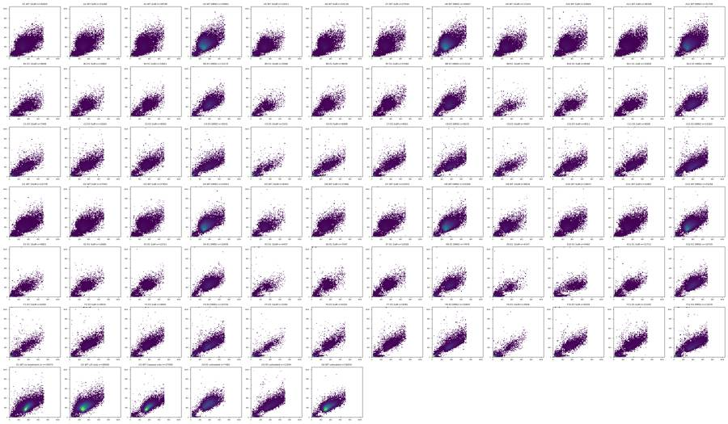
17
tool call · Read
{
"file_path": "/task/work/bl1_bl2.png"
}18
tool output
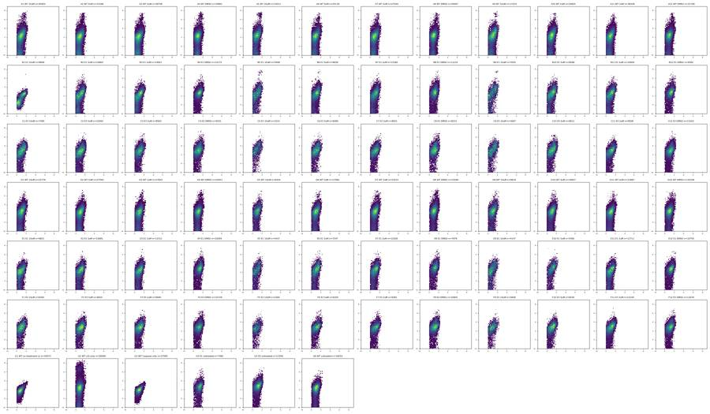
20
thinking
BL1 shows no clear positive population, even in the 10 µM camptothecin wells, so I'm checking BL1 and BL2 on proper scales against the single-stain controls.
21
tool call · Bash
cd /task; cat > work/hist.py <<'EOF'
import pickle, numpy as np, pandas as pd
import matplotlib; matplotlib.use('Agg'); import matplotlib.pyplot as plt
d=pickle.load(open('/task/work/data.pkl','rb'))
sel=['G1','G2','G3','G6','A4','A1','D1','B4','B1','E1','C4','C1','F1','G4','G5','A9','B9','C9']
fig,axes=plt.subplots(2,2,figsize=(16,10))
bins=np.logspace(0,6.1,200)
for ch,ax in zip(['BL1-A','BL2-A','BL1-H','BL2-H'],axes.flat):
for w in sel:
df=d[w]; m=(df['FSC-A']>100000)
x=df.loc[m,ch].clip(1,None)
ax.hist(x,bins=bins,histtype='step',density=True,label=w,lw=2 if w.startswith('G') else 1)
ax.set_xscale('log'); ax.set_title(ch+' (FSC-A>100k)'); ax.legend(fontsize=7,ncol=3)
plt.tight_layout(); plt.savefig('/task/work/hist.png',dpi=70)
for w in sel:
df=d[w]
print(w, len(df), 'BL1 pct:',np.percentile(df['BL1-A'],[1,50,90,99,99.9]).round(0), 'BL2 pct:',np.percentile(df['BL2-A'],[1,50,90,99,99.9]).round(0), 'BL1 min',df['BL1-A'].min(), 'BL2min', df['BL2-A'].min())
EOF
python3 work/hist.py22
tool output
G1 34073 BL1 pct: [ 18. 131. 263. 437. 605.] BL2 pct: [ -51. 406. 888. 1782. 2657.] BL1 min 4.0 BL2min -940.0 G2 28006 BL1 pct: [ 16. 140. 277. 449. 611.] BL2 pct: [ -1169. 640. 8196. 116359. 250454.] BL1 min 4.0 BL2min -34357.0 G3 27095 BL1 pct: [ 23. 167. 321. 500. 646.] BL2 pct: [ -57. 465. 954. 1735. 2508.] BL1 min 4.0 BL2min -371.0 G6 16054 BL1 pct: [ 22. 178. 333. 516. 672.] BL2 pct: [ -685. 588. 1723. 5032. 13614.] BL1 min 4.0 BL2min -31439.0 A4 34861 BL1 pct: [ 18. 159. 310. 474. 641.] BL2 pct: [-1226. 403. 1820. 12930. 96719.] BL1 min 4.0 BL2min -12278.0 A1 30920 BL1 pct: [ 11. 152. 343. 539. 695.] BL2 pct: [-1169. 418. 2381. 14436. 98378.] BL1 min 4.0 BL2min -19281.0 D1 22778 BL1 pct: [ 12. 167. 347. 538. 690.] BL2 pct: [-1054. 549. 2555. 8322. 28830.] BL1 min 4.0 BL2min -22042.0 B4 12172 BL1 pct: [ 15. 222. 405. 580. 712.] BL2 pct: [ -584. 893. 2535. 8151. 22987.] BL1 min 4.0 BL2min -16745.0 B1 9849 BL1 pct: [ 8. 142. 406. 596. 716.] BL2 pct: [-117. 242. 1056. 1897. 2899.] BL1 min 4.0 BL2min -245.0 E1 9821 BL1 pct: [ 9. 143. 338. 522. 691.] BL2 pct: [ -762. 494. 2169. 6546. 13328.] BL1 min 4.0 BL2min -14600.0 C4 9241 BL1 pct: [ 10. 189. 397. 612. 747.] BL2 pct: [ -735. 1298. 5295. 15435. 49263.] BL1 min 4.0 BL2min -43120.0 C1 7495 BL1 pct: [ 9. 170. 404. 610. 744.] BL2 pct: [ -755. 1034. 4435. 10116. 18574.] BL1 min 4.0 BL2min -9581.0 F1 6393 BL1 pct: [ 9. 165. 365. 583. 711.] BL2 pct: [ -626. 966. 3236. 7975. 16193.] BL1 min 4.0 BL2min -8738.0 G4 7482 BL1 pct: [ 21. 246. 424. 596. 722.] BL2 pct: [ -806. 818. 2405. 8452. 38937.] BL1 min 4.0 BL2min -6173.0 G5 11594 BL1 pct: [ 12. 215. 426. 633. 761.] BL2 pct: [ -642. 1080. 3438. 10399. 31544.] BL1 min 4.0 BL2min -65536.0 A9 17224 BL1 pct: [ 10. 169. 370. 537. 671.] BL2 pct: [-1224. 524. 2927. 10493. 88245.] BL1 min 4.0 BL2min -23737.0 B9 3505 BL1 pct: [ 7. 150. 403. 580. 705.] BL2 pct: [ -837. 837. 4739. 16369. 133745.] BL1 min 4.0 BL2min -24201.0 C9 4067 BL1 pct: [ 7. 159. 405. 592. 714.] BL2 pct: [ -786. 1298. 5916. 13443. 24057.] BL1 min 4.0 BL2min -8442.0
24
tool call · Read
{
"file_path": "/task/work/hist.png"
}25
tool output
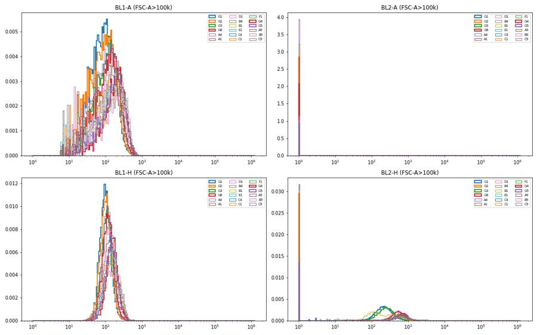
26
tool call · Bash
cd /task; python3 -c "
import pickle, numpy as np
d=pickle.load(open('/task/work/data.pkl','rb'))
for w in ['G1','G2','G3','A1','B1','C4','G5']:
df=d[w]
print(w, {c:(round(df[c].min()),round(df[c].max())) for c in df.columns if c!='Time'})
"
27
tool output
G1 {'FSC-A': (20992, 710099), 'SSC-A': (-63578, 1048575), 'BL1-A': (4, 773), 'BL2-A': (-940, 4715), 'FSC-H': (25034, 414202), 'SSC-H': (0, 947353), 'BL1-H': (21, 570), 'BL2-H': (2, 2473), 'FSC-W': (40, 322), 'SSC-W': (0, 322), 'BL1-W': (0, 0), 'BL2-W': (0, 60)}
G2 {'FSC-A': (17677, 712910), 'SSC-A': (-65536, 1048575), 'BL1-A': (4, 826), 'BL2-A': (-34357, 469842), 'FSC-H': (25181, 396198), 'SSC-H': (0, 1048575), 'BL1-H': (20, 724), 'BL2-H': (0, 197842), 'FSC-W': (42, 375), 'SSC-W': (0, 353), 'BL1-W': (0, 0), 'BL2-W': (0, 300)}
G3 {'FSC-A': (15526, 710871), 'SSC-A': (-2373, 1048575), 'BL1-A': (4, 769), 'BL2-A': (-371, 3208), 'FSC-H': (25211, 379555), 'SSC-H': (203, 1048575), 'BL1-H': (21, 577), 'BL2-H': (0, 2208), 'FSC-W': (37, 313), 'SSC-W': (0, 300), 'BL1-W': (0, 0), 'BL2-W': (0, 48)}
A1 {'FSC-A': (13280, 707042), 'SSC-A': (-22828, 1048105), 'BL1-A': (4, 805), 'BL2-A': (-19281, 185690), 'FSC-H': (25128, 441175), 'SSC-H': (100, 545412), 'BL1-H': (23, 643), 'BL2-H': (0, 98070), 'FSC-W': (41, 375), 'SSC-W': (0, 356), 'BL1-W': (0, 0), 'BL2-W': (0, 282)}
B1 {'FSC-A': (21117, 705050), 'SSC-A': (-6052, 1048575), 'BL1-A': (4, 803), 'BL2-A': (-245, 73746), 'FSC-H': (25140, 369237), 'SSC-H': (326, 973016), 'BL1-H': (19, 513), 'BL2-H': (0, 41864), 'FSC-W': (41, 290), 'SSC-W': (0, 277), 'BL1-W': (0, 0), 'BL2-W': (0, 137)}
C4 {'FSC-A': (6887, 706042), 'SSC-A': (-65536, 1048575), 'BL1-A': (4, 813), 'BL2-A': (-43120, 118525), 'FSC-H': (25127, 414496), 'SSC-H': (0, 919110), 'BL1-H': (21, 652), 'BL2-H': (0, 73424), 'FSC-W': (36, 375), 'SSC-W': (0, 375), 'BL1-W': (0, 0), 'BL2-W': (0, 216)}
G5 {'FSC-A': (16496, 704712), 'SSC-A': (-6598, 1048575), 'BL1-A': (4, 824), 'BL2-A': (-65536, 82411), 'FSC-H': (25090, 410221), 'SSC-H': (0, 916248), 'BL1-H': (23, 585), 'BL2-H': (0, 35569), 'FSC-W': (39, 375), 'SSC-W': (0, 284), 'BL1-W': (0, 0), 'BL2-W': (0, 216)}29
thinking
BL1-A caspase never tops about 830 and BL1-W is zero in every well, even at 10 µM CPT, and B1 seems to lack SYTOX. I'm checking the BL2 noise floor and acquisition stability over time next.
30
tool call · Bash
cd /task; cat > work/qc.py <<'EOF'
import pickle, numpy as np, pandas as pd
import matplotlib; matplotlib.use('Agg'); import matplotlib.pyplot as plt
d=pickle.load(open('/task/work/data.pkl','rb'))
lay=pd.read_csv('/task/inputs/plate_layout.csv').set_index('well')
rows=[]
for w,df in d.items():
big=df[df['FSC-A']>150000]
rows.append(dict(well=w, sample=lay.loc[w,'sample'], n=len(df), bl2_p1=np.percentile(df['BL2-A'],1), bl2_neg_frac=(df['BL2-A']<-500).mean()*100,
bl2_p99=np.percentile(df['BL2-A'],99), pct_bl2_gt5k=(big['BL2-A']>5000).mean()*100, bl1_med_big=np.median(big['BL1-A']), bl1_p99=np.percentile(big['BL1-A'],99),
pct_small=(df['FSC-A']<150000).mean()*100))
q=pd.DataFrame(rows); pd.set_option('display.width',250); pd.set_option('display.max_rows',100)
print(q.round(2).to_string())
q.to_csv('/task/work/qc.csv',index=False)
# time plots
fig,axes=plt.subplots(7,12,figsize=(36,18))
for ax in axes.flat: ax.axis('off')
for w,df in d.items():
r='ABCDEFG'.index(w[0]); c=int(w[1:])-1; ax=axes[r,c]; ax.axis('on')
t=df['Time'].values
h,e=np.histogram(t,bins=np.linspace(0,17,35))
ax.step(e[:-1],h/0.5,where='post'); ax.set_ylim(0,None)
ax2=ax.twinx(); ax2.plot(t[::5],np.log10(df['FSC-A'].clip(1).values[::5]),',',color='r',alpha=0.3)
ax.set_title(w,fontsize=8)
plt.tight_layout(); plt.savefig('/task/work/time.png',dpi=45)
EOF
python3 work/qc.py31
tool output
well sample n bl2_p1 bl2_neg_frac bl2_p99 pct_bl2_gt5k bl1_med_big bl1_p99 pct_small 0 A1 WT 10uM 30920 -1169.00 7.78 14435.62 3.54 187.0 569.00 30.49 1 A2 WT 5uM 31266 -1127.00 7.70 15966.35 2.83 182.0 539.64 33.36 2 A3 WT 2uM 38748 -1044.53 6.89 9448.65 2.29 182.0 546.00 40.22 3 A4 WT DMSO 34861 -1226.40 9.57 12930.40 2.25 163.0 481.00 6.78 4 A5 WT 10uM 14011 -1217.80 6.45 72871.10 5.76 199.0 559.00 31.82 5 A6 WT 5uM 25118 -985.83 6.01 12494.70 3.58 181.0 549.00 31.59 6 A7 WT 2uM 27544 -955.14 5.99 10087.40 2.99 183.0 535.00 35.55 7 A8 WT DMSO 30067 -1164.00 7.87 10433.56 2.28 164.0 485.62 7.74 8 A9 WT 10uM 17224 -1224.00 6.51 10492.70 3.64 217.0 558.00 34.64 9 A10 WT 5uM 24604 -983.00 5.38 10698.43 3.45 194.0 549.00 29.23 10 A11 WT 2uM 38346 -967.55 5.80 8826.95 2.99 189.0 550.00 33.72 11 A12 WT DMSO 31708 -1157.86 6.20 13294.69 3.35 167.0 498.00 7.30 12 B1 E1 10uM 9849 -117.00 0.00 1896.52 0.02 268.0 647.42 52.41 13 B2 E1 5uM 10963 -746.00 3.01 9008.66 4.70 261.0 614.00 53.47 14 B3 E1 2uM 14921 -551.00 1.44 5912.40 2.61 256.0 613.12 53.78 15 B4 E1 DMSO 12172 -584.00 1.48 8150.51 2.70 245.0 599.00 16.32 16 B5 E1 10uM 5068 -722.66 2.33 15837.82 10.98 273.0 599.76 54.36 17 B6 E1 5uM 9638 -727.00 2.80 10187.35 5.58 248.0 603.06 44.02 18 B7 E1 2uM 13360 -717.23 3.08 9320.10 5.04 250.0 591.51 50.97 19 B8 E1 DMSO 11210 -911.55 3.00 14192.39 7.29 238.0 587.00 22.02 20 B9 E1 10uM 3505 -836.84 3.57 16369.48 14.83 304.0 626.76 58.26 21 B10 E1 5uM 8268 -764.33 3.21 10491.48 6.53 273.0 630.00 49.98 22 B11 E1 2uM 10609 -719.76 2.66 8845.08 5.63 260.0 618.00 50.28 23 B12 E1 DMSO 9382 -778.38 2.39 13613.49 4.96 256.0 618.00 16.99 24 C1 E3 10uM 7495 -755.06 2.48 10116.24 10.83 267.5 668.79 49.01 25 C2 E3 5uM 10263 -826.00 3.12 11578.08 7.91 247.0 636.24 43.55 26 C3 E3 2uM 8563 -714.00 2.21 12382.18 8.01 245.0 635.36 40.53 27 C4 E3 DMSO 9241 -734.60 1.80 15435.00 12.32 250.0 649.60 36.06 28 C5 E3 10uM 3151 -686.00 1.84 13221.50 24.85 285.0 654.05 58.87 29 C6 E3 5uM 6099 -609.14 1.54 12299.00 11.26 263.0 640.20 50.20 30 C7 E3 2uM 8001 -523.00 1.12 11015.00 9.22 260.0 671.90 44.31 31 C8 E3 DMSO 8215 -647.02 1.62 17394.20 12.76 246.0 655.43 30.37 32 C9 E3 10uM 4067 -785.68 2.48 13443.38 19.43 290.0 662.00 55.20 33 C10 E3 5uM 8011 -743.80 2.37 12843.40 12.11 268.0 654.86 44.98 34 C11 E3 2uM 9008 -579.00 1.50 9356.93 7.09 262.0 650.04 41.44 35 C12 E3 DMSO 13163 -651.04 1.63 12755.68 8.21 242.0 648.66 21.99 36 D1 WT 10uM 22778 -1054.15 5.11 8322.45 3.59 204.0 567.34 34.66 37 D2 WT 5uM 27593 -966.08 5.49 7105.08 2.21 193.0 530.66 33.91 38 D3 WT 2uM 27824 -884.77 4.61 8329.55 2.79 201.0 546.00 41.06 39 D4 WT DMSO 24551 -989.50 5.58 12471.00 3.30 183.0 513.77 6.63 40 D5 WT 10uM 6454 -982.00 4.43 11112.99 5.04 209.0 557.44 29.05 41 D6 WT 5uM 17066 -889.00 4.23 8751.15 3.32 200.0 547.00 34.17 42 D7 WT 2uM 23253 -775.48 3.27 10189.24 3.64 203.0 540.00 38.75 43 D8 WT DMSO 23299 -947.02 3.80 20418.00 5.38 182.0 523.00 7.62 44 D9 WT 10uM 8616 -1131.35 4.62 10710.20 4.92 207.0 569.00 31.87 45 D10 WT 5uM 19657 -817.88 3.36 8102.44 3.01 210.0 554.00 30.58 46 D11 WT 2uM 31867 -806.68 3.55 6532.08 1.99 205.0 545.68 34.63 47 D12 WT DMSO 25256 -972 … [3,795 more characters not shown]
33
agent
B1 is confirmed as missing SYTOX (BL2 1st percentile −117, 0.00% events below −500, 0.02% >5000 — the same as unstained G1/G3). Now the time plots:
34
tool call · Read
{
"file_path": "/task/work/time.png"
}35
tool output
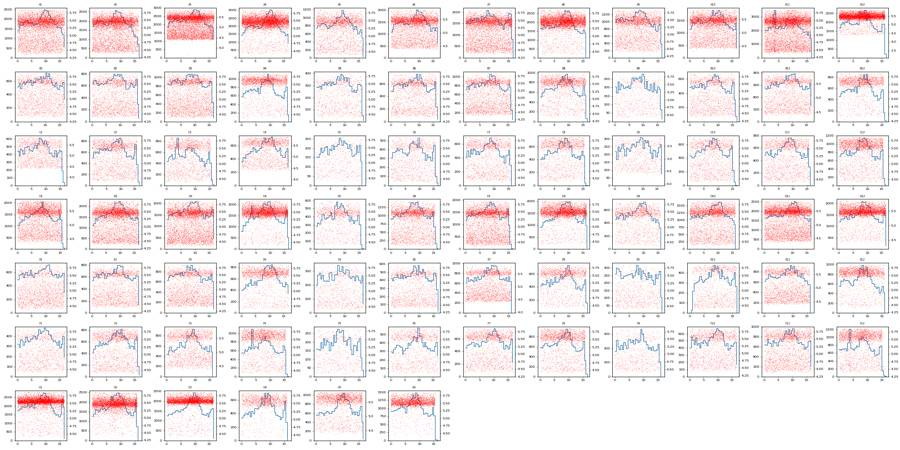
37
agent
Acquisition is stable in every well (no clogs, no drop-outs). Now let me design the scatter gates — looking at FSC/SSC on log axes and FSC-A vs FSC-H for representative wells.
38
tool call · Bash
cd /task; cat > work/scatter2.py <<'EOF'
import pickle, numpy as np, pandas as pd
import matplotlib; matplotlib.use('Agg'); import matplotlib.pyplot as plt
from matplotlib.colors import LogNorm
d=pickle.load(open('/task/work/data.pkl','rb'))
sel=['G1','G2','A4','A1','A9','B4','B1','B9','E1','C4','C9','F5']
fig,axes=plt.subplots(3,12,figsize=(48,12))
for i,w in enumerate(sel):
df=d[w]
ax=axes[0,i]; ax.hist2d(df['FSC-A']/1e3,df['SSC-A']/1e3,bins=150,range=[[0,750],[0,1050]],norm=LogNorm()); ax.set_title(w+' FSC-A vs SSC-A lin')
ax=axes[1,i]; ax.hist2d(np.log10(df['FSC-A'].clip(1e3)),np.log10(df['SSC-A'].clip(1e3)),bins=150,range=[[4,6],[3,6.1]],norm=LogNorm()); ax.set_title(w+' log')
ax=axes[2,i]; ax.hist2d(df['FSC-A']/1e3,df['FSC-H']/1e3,bins=150,range=[[0,750],[0,450]],norm=LogNorm()); ax.set_title(w+' FSC-A vs FSC-H')
for a in axes[:,i]: a.grid(alpha=0.3)
plt.tight_layout(); plt.savefig('/task/work/scatter2.png',dpi=40)
EOF
python3 work/scatter2.py39
tool output
(Bash completed with no output)
40
tool call · Read
{
"file_path": "/task/work/scatter2.png"
}41
tool output
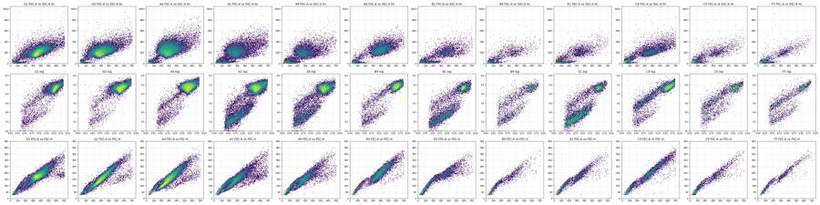
43
tool call · Bash
cd /task; python3 -c "
import pickle, numpy as np
d=pickle.load(open('/task/work/data.pkl','rb'))
for w in ['G1','A4','A1','B4','C4','G5','E12']:
df=d[w]; f=df['FSC-A']
print(w, f.max(), (f>690000).mean()*100, (f>700000).mean()*100, 'FSC-H max',df['FSC-H'].max(), 'SSC-A>=1048575', (df['SSC-A']>=1048575).sum(), 'SSC-H max', (df['SSC-H']>=1048575).sum())
print(' top FSC-A values', np.sort(f.values)[-8:])
"
44
tool output
G1 710099.0 0.2788131365010419 0.11739500484254395 FSC-H max 414202.0 SSC-A>=1048575 3 SSC-H max 0 top FSC-A values [706525. 706830. 707487. 707504. 708111. 708207. 708744. 710099.] A4 710472.0 0.11474140156622013 0.05737070078311007 FSC-H max 412856.0 SSC-A>=1048575 1 SSC-H max 0 top FSC-A values [703721. 704044. 705090. 705235. 706024. 707435. 708431. 710472.] A1 707042.0 0.17787839586028462 0.05821474773609315 FSC-H max 441175.0 SSC-A>=1048575 0 SSC-H max 0 top FSC-A values [703003. 703070. 703461. 703681. 704562. 705687. 706343. 707042.] B4 705244.0 0.2711140322050608 0.05750903713440683 FSC-H max 407709.0 SSC-A>=1048575 2 SSC-H max 1 top FSC-A values [699900. 701224. 701234. 701444. 702096. 702319. 703804. 705244.] C4 706042.0 0.5086029650470728 0.14067741586408397 FSC-H max 414496.0 SSC-A>=1048575 5 SSC-H max 0 top FSC-A values [701477. 702454. 702727. 703656. 703715. 703891. 705675. 706042.] G5 704712.0 0.48300845264792136 0.13800241504226324 FSC-H max 410221.0 SSC-A>=1048575 3 SSC-H max 0 top FSC-A values [702559. 702858. 702901. 702934. 703079. 703318. 704508. 704712.] E12 702992.0 0.21385402138540213 0.037192003719200374 FSC-H max 386887.0 SSC-A>=1048575 0 SSC-H max 0 top FSC-A values [699262. 699407. 699694. 699953. 700447. 702143. 702716. 702992.]
46
thinking
FSC-A tops out near 705k, but under 0.6% of events sit there, so saturation isn't a real concern. Next I'll check whether the small low-FSC events in the CPT wells are debris or dying cells.
47
tool call · Bash
cd /task; cat > work/debris.py <<'EOF'
import pickle, numpy as np, pandas as pd
import matplotlib; matplotlib.use('Agg'); import matplotlib.pyplot as plt
from matplotlib.colors import LogNorm
d=pickle.load(open('/task/work/data.pkl','rb'))
sel=['G2','A4','A1','B4','B9','C4','C9','E1']
fig,axes=plt.subplots(3,8,figsize=(40,15))
for i,w in enumerate(sel):
df=d[w]; lf=np.log10(df['FSC-A'].clip(1e3)); ls=np.log10(df['SSC-A'].clip(1e3))
pos=df['BL2-A']>4000
ax=axes[0,i]; ax.scatter(lf[~pos],ls[~pos],s=1,c='grey',alpha=0.3); ax.scatter(lf[pos],ls[pos],s=2,c='r'); ax.set_title(f'{w} red=BL2>4000 ({pos.mean()*100:.1f}%)'); ax.set_xlim(4,6); ax.set_ylim(3,6.1)
ax=axes[1,i]; ax.hist2d(lf, np.arcsinh(df['BL2-A']/200),bins=120,range=[[4,6],[-3,8]],norm=LogNorm()); ax.set_title(w+' logFSC vs asinh BL2')
ax=axes[2,i]; ax.hist2d(lf, df['BL1-A'],bins=120,range=[[4,6],[0,900]],norm=LogNorm()); ax.set_title(w+' logFSC vs BL1 lin')
plt.tight_layout(); plt.savefig('/task/work/debris.png',dpi=40)
EOF
python3 work/debris.py48
tool output
(Bash completed with no output)
49
tool call · Read
{
"file_path": "/task/work/debris.png"
}50
tool output
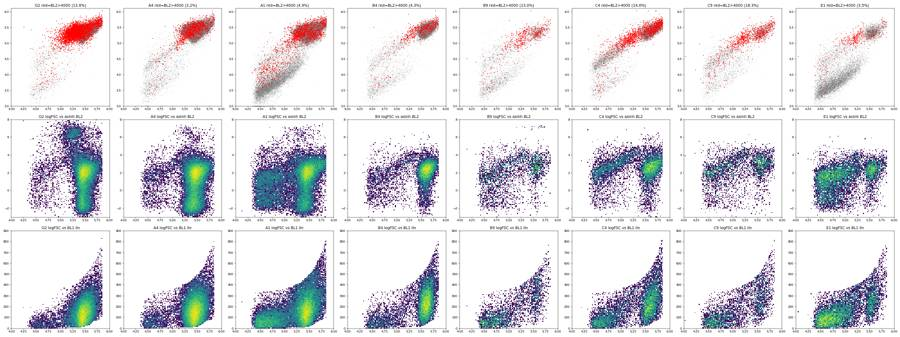
52
thinking
In the dual-stained wells, SYTOX+ events form a dim band (BL2 around 2–9k), far below the bright dead-cell control (50–100k). I'm checking 1-D BL2 histograms within the cell cluster to set the live/dead boundary.
53
tool call · Bash
cd /task; cat > work/bl2hist.py <<'EOF'
import pickle, numpy as np, pandas as pd
import matplotlib; matplotlib.use('Agg'); import matplotlib.pyplot as plt
d=pickle.load(open('/task/work/data.pkl','rb'))
groups={'controls':['G1','G2','G3','G6','G4','G5'],'WT':['A4','A3','A2','A1','A12','A9'],'E1':['B4','B3','B2','B9','E4','E1'],'E3':['C4','C3','C2','C1','C12','C9']}
fig,axes=plt.subplots(2,4,figsize=(28,10))
bins=np.linspace(-4,9,200)
for j,(g,ws) in enumerate(groups.items()):
for w in ws:
df=d[w]; m=(df['FSC-A']>150000)&(df['SSC-A']>50000)
x=np.arcsinh(df.loc[m,'BL2-A']/200)
axes[0,j].hist(x,bins=bins,histtype='step',density=True,label=w)
axes[1,j].hist(x,bins=bins,histtype='step',density=True,label=w,log=True)
for a in axes[:,j]:
a.legend(); a.set_title(g+' BL2 asinh(x/200), FSC>150k')
for t in [1000,2000,3000,5000,10000]: a.axvline(np.arcsinh(t/200),color='k',lw=0.5,ls=':')
plt.tight_layout(); plt.savefig('/task/work/bl2hist.png',dpi=45)
EOF
python3 work/bl2hist.py54
tool output
(Bash completed with no output)
55
tool call · Read
{
"file_path": "/task/work/bl2hist.png"
}56
tool output
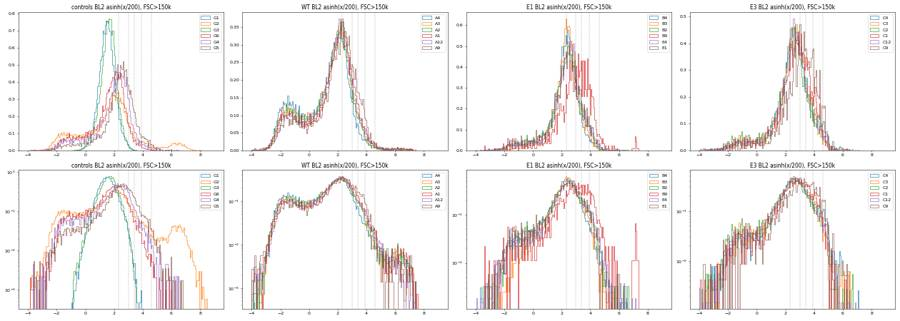
58
thinking
The BL2 data show a main SYTOX-negative peak with a dim shoulder and a small bright tail, and the G2 L/D control has a clear valley before its bright dead peak. I'm drawing candidate scatter gates and overlaying them across many wells next.
59
tool call · Bash
cd /task; cat > work/gatedraw.py <<'EOF'
import pickle, numpy as np, pandas as pd, sys
import matplotlib; matplotlib.use('Agg'); import matplotlib.pyplot as plt
from matplotlib.colors import LogNorm
from matplotlib.path import Path
d=pickle.load(open('/task/work/data.pkl','rb'))
CELLS=[(90e3,45e3),(220e3,45e3),(715e3,150e3),(715e3,1040e3),(450e3,1040e3),(90e3,200e3)]
SING=[(60e3,40e3),(250e3,120e3),(715e3,330e3),(715e3,470e3),(400e3,470e3),(60e3,70e3)]
sel=['G1','G2','G3','G6','A4','A1','A9','D5','B4','B1','B9','E1','E9','C4','C9','F5','C5','G4']
fig,axes=plt.subplots(3,len(sel),figsize=(4*len(sel),12))
for i,w in enumerate(sel):
df=d[w]
ax=axes[0,i]; ax.hist2d(np.log10(df['FSC-A'].clip(1e3)),np.log10(df['SSC-A'].clip(1e3)),bins=150,range=[[4,6],[3,6.1]],norm=LogNorm())
p=np.array(CELLS+[CELLS[0]]); ax.plot(np.log10(p[:,0]),np.log10(p[:,1]),'r-')
inC=Path(CELLS).contains_points(df[['FSC-A','SSC-A']].values)
ax.set_title(f'{w} cells {inC.mean()*100:.1f}%')
ax=axes[1,i]; ax.hist2d(df['FSC-A']/1e3,df['SSC-A']/1e3,bins=150,range=[[0,750],[0,1050]],norm=LogNorm())
ax.plot(p[:,0]/1e3,p[:,1]/1e3,'r-')
c=df[inC]
ax=axes[2,i]; ax.hist2d(c['FSC-A']/1e3,c['FSC-H']/1e3,bins=150,range=[[0,750],[0,480]],norm=LogNorm())
q=np.array(SING+[SING[0]]); ax.plot(q[:,0]/1e3,q[:,1]/1e3,'r-')
inS=Path(SING).contains_points(c[['FSC-A','FSC-H']].values)
ax.set_title(f'singlets {inS.mean()*100:.1f}% of cells')
plt.tight_layout(); plt.savefig('/task/work/gatedraw.png',dpi=38)
EOF
python3 work/gatedraw.py60
tool output
(Bash completed with no output)
61
tool call · Read
{
"file_path": "/task/work/gatedraw.png"
}62
tool output
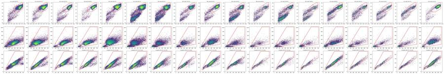
64
agent
The montage is too small to judge the gate edges. Let me render fewer wells at a larger size.
65
tool call · Bash
cd /task; cat > work/gatedraw2.py <<'EOF'
import pickle, numpy as np, pandas as pd, sys
import matplotlib; matplotlib.use('Agg'); import matplotlib.pyplot as plt
from matplotlib.colors import LogNorm
from matplotlib.path import Path
d=pickle.load(open('/task/work/data.pkl','rb'))
exec(open('/task/work/gatedefs.py').read())
sel=sys.argv[1].split(',')
fig,axes=plt.subplots(2,len(sel),figsize=(6*len(sel),11))
for i,w in enumerate(sel):
df=d[w]
ax=axes[0,i]; ax.hist2d(np.log10(df['FSC-A'].clip(1e3)),np.log10(df['SSC-A'].clip(1e3)),bins=120,range=[[4,6],[3,6.1]],norm=LogNorm())
p=np.array(CELLS+[CELLS[0]]); ax.plot(np.log10(p[:,0]),np.log10(p[:,1]),'r-',lw=2)
inC=Path(CELLS).contains_points(df[['FSC-A','SSC-A']].values)
ax.set_title(f'{w} log FSC-A vs log SSC-A; cells {inC.mean()*100:.1f}%'); ax.grid(alpha=.3)
c=df[inC]
ax=axes[1,i]; ax.hist2d(c['FSC-A']/1e3,c['FSC-H']/1e3,bins=120,range=[[0,750],[0,480]],norm=LogNorm())
q=np.array(SING+[SING[0]]); ax.plot(q[:,0]/1e3,q[:,1]/1e3,'r-',lw=2)
inS=Path(SING).contains_points(c[['FSC-A','FSC-H']].values)
ax.set_title(f'FSC-A vs FSC-H (k); singlets {inS.mean()*100:.1f}% of cells'); ax.grid(alpha=.3)
plt.tight_layout(); plt.savefig('/task/work/gatedraw2.png',dpi=55)
EOF
cat > work/gatedefs.py <<'EOF'
CELLS=[(90e3,45e3),(220e3,45e3),(715e3,150e3),(715e3,1040e3),(450e3,1040e3),(90e3,200e3)]
SING=[(60e3,40e3),(250e3,120e3),(715e3,330e3),(715e3,470e3),(400e3,470e3),(60e3,70e3)]
EOF
python3 work/gatedraw2.py G1,A4,A1,B4,C966
tool output
(Bash completed with no output)
67
tool call · Read
{
"file_path": "/task/work/gatedraw2.png"
}68
tool output
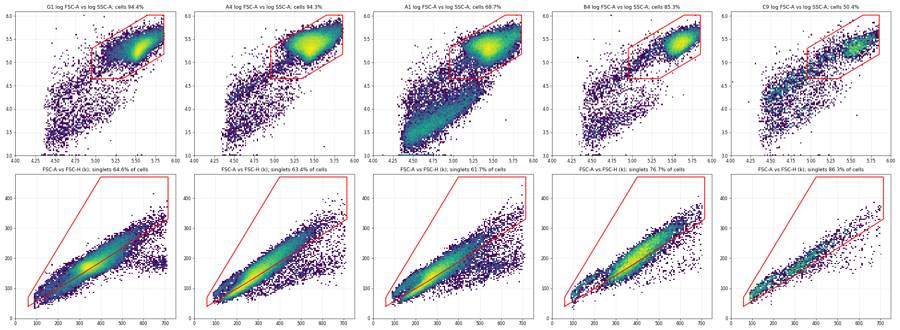
70
agent
The cells gate looks reasonable, but the singlet gate's lower edge cuts through the singlet diagonal. Let me find the singlet/doublet boundary from the FSC-H/FSC-A ratio.
71
tool call · Bash
cd /task; cat > work/ratio.py <<'EOF'
import pickle, numpy as np
import matplotlib; matplotlib.use('Agg'); import matplotlib.pyplot as plt
from matplotlib.path import Path
from matplotlib.colors import LogNorm
d=pickle.load(open('/task/work/data.pkl','rb'))
exec(open('/task/work/gatedefs.py').read())
fig,axes=plt.subplots(1,2,figsize=(18,6))
for w in ['G1','G3','A4','A1','B4','B9','C4','C9','E1','F5']:
df=d[w]; inC=Path(CELLS).contains_points(df[['FSC-A','SSC-A']].values); c=df[inC]
r=c['FSC-H']/c['FSC-A']
axes[0].hist(r,bins=np.linspace(0.2,0.8,150),histtype='step',density=True,label=w)
for lo,hi in [(9e4,3e5),(3e5,5e5),(5e5,7.2e5)]:
m=(c['FSC-A']>=lo)&(c['FSC-A']<hi)
print(w, int(lo/1e3), np.percentile(r[m],[2,5,25,50,75]).round(3), end=' | ')
print()
axes[0].legend()
df=d['G1']; inC=Path(CELLS).contains_points(df[['FSC-A','SSC-A']].values); c=df[inC]
axes[1].hist2d(c['FSC-A'],c['FSC-H']/c['FSC-A'],bins=150,range=[[0,7.2e5],[0.2,0.8]],norm=LogNorm())
plt.savefig('/task/work/ratio.png',dpi=60)
EOF
python3 work/ratio.py72
tool output
G1 90 [0.347 0.378 0.46 0.525 0.595] | G1 300 [0.393 0.413 0.458 0.489 0.521] | G1 500 [0.253 0.269 0.403 0.469 0.505] | G3 90 [0.422 0.441 0.511 0.57 0.607] | G3 300 [0.403 0.421 0.467 0.499 0.53 ] | G3 500 [0.262 0.275 0.409 0.479 0.514] | A4 90 [0.398 0.418 0.46 0.491 0.532] | A4 300 [0.323 0.406 0.474 0.509 0.545] | A4 500 [0.244 0.257 0.324 0.479 0.525] | A1 90 [0.399 0.42 0.465 0.501 0.556] | A1 300 [0.295 0.363 0.459 0.501 0.539] | A1 500 [0.242 0.256 0.304 0.386 0.495] | B4 90 [0.398 0.429 0.478 0.557 0.697] | B4 300 [0.392 0.418 0.473 0.508 0.543] | B4 500 [0.272 0.333 0.474 0.508 0.533] | B9 90 [0.446 0.478 0.585 0.655 0.735] | B9 300 [0.386 0.415 0.491 0.526 0.56 ] | B9 500 [0.267 0.309 0.392 0.481 0.527] | C4 90 [0.43 0.456 0.521 0.609 0.719] | C4 300 [0.433 0.462 0.515 0.542 0.566] | C4 500 [0.297 0.37 0.496 0.525 0.546] | C9 90 [0.449 0.484 0.569 0.656 0.74 ] | C9 300 [0.385 0.418 0.494 0.534 0.563] | C9 500 [0.281 0.301 0.432 0.502 0.533] | E1 90 [0.431 0.451 0.521 0.619 0.731] | E1 300 [0.41 0.442 0.499 0.532 0.564] | E1 500 [0.265 0.283 0.405 0.494 0.531] | F5 90 [0.453 0.474 0.568 0.649 0.749] | F5 300 [0.409 0.456 0.522 0.552 0.577] | F5 500 [0.309 0.34 0.494 0.525 0.549] |
73
tool call · Read
{
"file_path": "/task/work/ratio.png"
}74
tool output
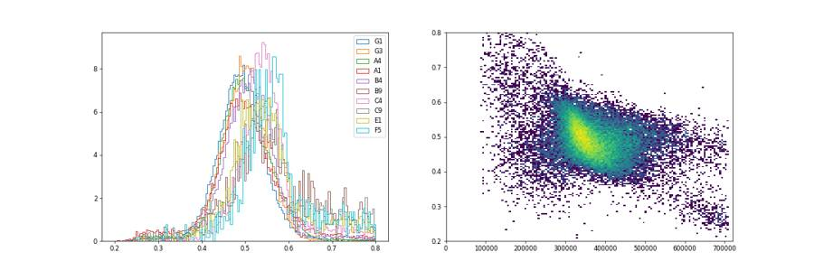
76
agent
Singlets sit at FSC-H/FSC-A ≈ 0.40–0.62 and doublets fall below ~0.37 at high FSC-A, so I'll set the singlet lower edge on a 0.37 ratio line. Next, the live/dead boundary within singlets:
77
tool call · Bash
cd /task; cat > work/gatedefs.py <<'EOF'
CELLS=[(90e3,45e3),(220e3,45e3),(715e3,150e3),(715e3,1040e3),(450e3,1040e3),(90e3,200e3)]
SING=[(60e3,22e3),(715e3,265e3),(715e3,480e3),(380e3,480e3),(60e3,80e3)]
EOF
cat > work/live.py <<'EOF'
import pickle, numpy as np, pandas as pd
import matplotlib; matplotlib.use('Agg'); import matplotlib.pyplot as plt
from matplotlib.path import Path
from matplotlib.colors import LogNorm
d=pickle.load(open('/task/work/data.pkl','rb'))
exec(open('/task/work/gatedefs.py').read())
def sing(df):
inC=Path(CELLS).contains_points(df[['FSC-A','SSC-A']].values); c=df[inC]
inS=Path(SING).contains_points(c[['FSC-A','FSC-H']].values); return c[inS]
sel=['G1','G2','G3','G6','G4','G5','A4','A1','B4','B9','C4','C9']
fig,axes=plt.subplots(2,6,figsize=(36,12))
for ax,w in zip(axes.flat,sel):
s=sing(d[w])
ax.hist2d(s['FSC-A']/1e3,np.arcsinh(s['BL2-A']/200),bins=120,range=[[50,720],[-4,8.5]],norm=LogNorm())
for t in [3000,5000,10000]: ax.axhline(np.arcsinh(t/200),color='r',lw=1,ls=':')
ax.set_title(f"{w} n={len(s)} >3k {np.mean(s['BL2-A']>3000)*100:.1f}% >5k {np.mean(s['BL2-A']>5000)*100:.1f}% >10k {np.mean(s['BL2-A']>10000)*100:.1f}%",fontsize=11)
plt.tight_layout(); plt.savefig('/task/work/live.png',dpi=40)
EOF
python3 work/live.py78
tool output
(Bash completed with no output)
79
tool call · Read
{
"file_path": "/task/work/live.png"
}80
tool output
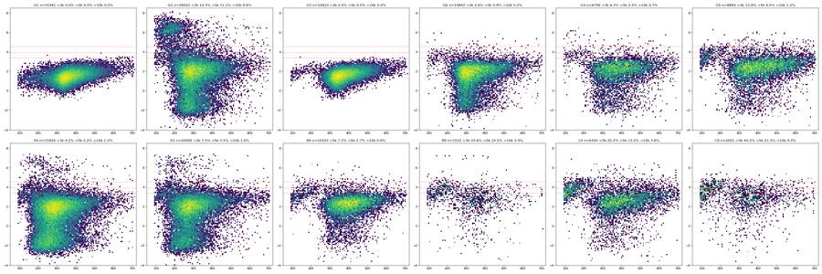
82
thinking
KO wells show a small dead population (SYTOX-dim, small FSC) whose upper edge climbs with FSC, so a fixed BL2 cutoff would misclassify something. I'm trying a live boundary that slants with FSC, then checking BL1 within live singlets.
83
tool call · Bash
cd /task; cat > work/gatedefs.py <<'EOF'
CELLS=[(90e3,45e3),(220e3,45e3),(715e3,150e3),(715e3,1040e3),(450e3,1040e3),(90e3,200e3)]
SING=[(60e3,22e3),(715e3,265e3),(715e3,480e3),(380e3,480e3),(60e3,80e3)]
# live: FSC-A x BL2-A, upper boundary slanted 2000@60k -> 7000@720k
LIVE=[(60e3,-200e3),(720e3,-200e3),(720e3,7000),(60e3,2000)]
EOF
cat > work/live2.py <<'EOF'
import pickle, numpy as np, pandas as pd
from matplotlib.path import Path
d=pickle.load(open('/task/work/data.pkl','rb'))
lay=pd.read_csv('/task/inputs/plate_layout.csv').set_index('well')
exec(open('/task/work/gatedefs.py').read())
def sing(df):
inC=Path(CELLS).contains_points(df[['FSC-A','SSC-A']].values); c=df[inC]
inS=Path(SING).contains_points(c[['FSC-A','FSC-H']].values); return c[inS]
rows=[]
for w,df in d.items():
s=sing(df); inL=Path(LIVE).contains_points(s[['FSC-A','BL2-A']].values)
rows.append(dict(well=w,sample=lay.loc[w,'sample'],cm=lay.loc[w,'conditioned_media'][:4],sing=len(s),dead_slant=100-inL.mean()*100,**{f'dead_{t}':(s['BL2-A']>t).mean()*100 for t in [3000,4000,5000,10000]}))
r=pd.DataFrame(rows); pd.set_option('display.width',200); print(r.round(1).to_string())
EOF
python3 work/live2.py84
tool output
well sample cm sing dead_slant dead_3000 dead_4000 dead_5000 dead_10000 0 A1 WT 10uM 24hr 20006 5.8 7.5 5.0 3.5 1.6 1 A2 WT 5uM 24hr 20075 5.3 6.4 4.2 3.1 1.5 2 A3 WT 2uM 24hr 21771 4.6 5.9 3.7 2.6 1.1 3 A4 WT DMSO 24hr 31926 3.5 4.2 2.9 2.2 1.2 4 A5 WT 10uM 48hr 9430 10.2 11.4 8.3 6.3 2.9 5 A6 WT 5uM 48hr 16622 6.7 8.0 5.3 3.8 1.3 6 A7 WT 2uM 48hr 16998 5.6 6.9 4.4 3.1 1.1 7 A8 WT DMSO 48hr 27304 3.9 4.6 3.1 2.3 0.9 8 A9 WT 10uM No c 10953 7.9 10.9 6.7 4.1 0.9 9 A10 WT 5uM No c 16748 6.3 8.8 5.6 3.6 1.1 10 A11 WT 2uM No c 24127 5.1 7.3 4.5 3.0 0.8 11 A12 WT DMSO No c 28302 4.7 6.4 4.2 3.0 1.2 12 B1 E1 10uM 24hr 4127 0.1 0.1 0.0 0.0 0.0 13 B2 E1 5uM 24hr 4860 10.1 13.3 8.3 5.2 0.8 14 B3 E1 2uM 24hr 6406 6.2 9.4 5.3 3.0 0.2 15 B4 E1 DMSO 24hr 10203 4.8 7.2 4.3 2.7 0.6 16 B5 E1 10uM 48hr 2365 22.7 25.0 17.1 11.8 2.7 17 B6 E1 5uM 48hr 5382 11.9 14.4 9.1 6.1 1.3 18 B7 E1 2uM 48hr 6406 10.8 13.5 8.4 5.4 0.9 19 B8 E1 DMSO 48hr 8888 10.9 14.9 10.0 7.2 1.7 20 B9 E1 10uM No c 1532 28.1 33.6 23.3 15.5 3.4 21 B10 E1 5uM No c 4092 14.2 18.8 12.5 7.9 1.4 22 B11 E1 2uM No c 5191 12.0 15.6 10.2 6.7 0.8 23 B12 E1 DMSO No c 7807 7.6 11.2 7.0 5.1 1.4 24 C1 E3 10uM 24hr 3879 20.1 26.7 16.8 11.7 1.3 25 C2 E3 5uM 24hr 5936 14.8 19.4 13.0 9.2 2.0 26 C3 E3 2uM 24hr 5124 14.3 20.1 13.0 9.0 1.9 27 C4 E3 DMSO 24hr 6350 19.1 25.2 17.7 13.2 3.8 28 C5 E3 10uM 48hr 1543 41.0 42.8 33.1 24.6 5.6 29 C6 E3 5uM 48hr 3288 22.6 26.3 18.6 13.4 2.6 30 C7 E3 2uM 48hr 4589 16.7 21.9 14.0 9.6 1.9 31 C8 E3 DMSO 48hr 6122 19.6 25.8 18.5 13.8 3.9 32 C9 E3 10uM No c 2001 32.8 40.2 29.6 21.3 4.3 33 C10 E3 5uM No c 4531 20.0 27.5 19.2 13.7 2.8 34 C11 E3 2uM No c 5324 12.4 19.1 11.8 7.9 1.1 35 C12 E3 DMSO No c 10523 12.0 18.6 12.5 8.9 2.0 36 D1 WT 10uM 24hr 13831 6.1 8.6 5.2 3.4 0.7 37 D2 WT 5uM 24hr 17442 4.4 5.7 3.4 2.2 0.5 38 D3 WT 2uM 24hr 15646 5.0 6.9 4.2 2.8 1.0 39 D4 WT DMSO 24hr 22313 4.5 6.1 4.2 3.1 1.2 40 D5 WT 10uM 48hr 4480 9.1 11.4 8.0 5.6 1.3 41 D6 WT 5uM 48hr 10787 6.1 7.9 5.1 3.4 1.0 42 D7 WT 2uM 48hr 13811 6.3 8.5 5.2 3.6 1.5 43 D8 WT DMSO 48hr 20824 7.4 9.7 6.7 5.1 1.9 44 D9 WT 10uM No c 5754 9.1 11.5 7.6 5.2 1.4 45 D10 WT 5uM No c 13063 5.2 7.4 4.5 3.0 0.8 46 D11 WT 2uM No c 20051 3.7 5.3 3.0 2.0 0.6 47 D12 WT DMSO No c 22500 4.8 6.7 4.3 3.0 1.0 48 E1 E1 10uM 24hr 2827 12.7 14.6 8.9 5.4 0.3 49 E2 E1 5uM 24hr 4848 8.7 10.5 6.8 4.4 0.5 50 E3 E1 2uM 24hr 4856 9.4 12.8 8.1 4.9 0.7 51 E4 E1 DMSO 24hr 8350 9.0 14.5 9.1 6.0 1.1 52 E5 E1 10uM 48hr 1612 24.4 24.9 16.9 10.0 0.9 53 E6 E1 5uM 48hr 3413 13.6 15.9 9.7 6.1 1.0 54 E7 E1 2uM 48hr 5063 11.7 14.2 8.9 5.6 0.8 55 E8 E1 DMSO 48hr 6097 14.4 … [2,373 more characters not shown]
86
thinking
The SYTOX dead-cell readout responds to camptothecin (E1 10 µM ≈28–32% vs DMSO 6–8%), so it works. Next I'm checking the caspase BL1 channel in live singlets against the unstained controls.
87
tool call · Bash
cd /task; cat > work/bl1.py <<'EOF'
import pickle, numpy as np, pandas as pd
import matplotlib; matplotlib.use('Agg'); import matplotlib.pyplot as plt
from matplotlib.path import Path
from matplotlib.colors import LogNorm
d=pickle.load(open('/task/work/data.pkl','rb'))
exec(open('/task/work/gatedefs.py').read())
def live(df):
inC=Path(CELLS).contains_points(df[['FSC-A','SSC-A']].values); c=df[inC]
inS=Path(SING).contains_points(c[['FSC-A','FSC-H']].values); s=c[inS]
return s[Path(LIVE).contains_points(s[['FSC-A','BL2-A']].values)], s
sel=['G1','G2','G3','G6','G4','G5','A4','A1','A9','B4','B9','E9','C4','C9','C5','F12','D5','A5']
fig,axes=plt.subplots(3,6,figsize=(36,18))
for ax,w in zip(axes.flat,sel):
l,s=live(d[w])
ax.hist2d(l['FSC-A']/1e3,l['BL1-A'],bins=120,range=[[50,720],[0,900]],norm=LogNorm())
dead=s[~Path(LIVE).contains_points(s[['FSC-A','BL2-A']].values)]
ax.scatter(dead['FSC-A']/1e3,dead['BL1-A'],s=2,c='r',alpha=.4)
ax.set_title(f"{w} live n={len(l)}; BL1 p99={np.percentile(l['BL1-A'],99):.0f} max={l['BL1-A'].max():.0f}; red=dead",fontsize=12)
plt.tight_layout(); plt.savefig('/task/work/bl1.png',dpi=40)
EOF
python3 work/bl1.py88
tool output
(Bash completed with no output)
89
tool call · Read
{
"file_path": "/task/work/bl1.png"
}90
tool output
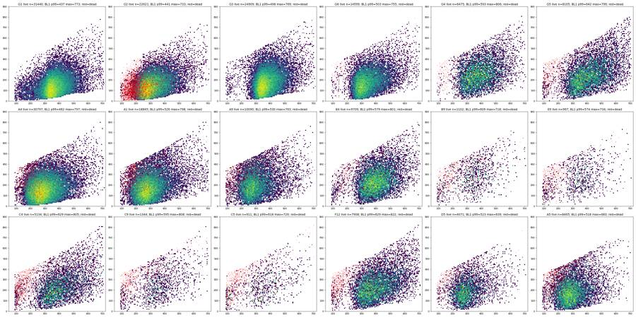
92
thinking
No caspase-positive population shows up in any well, not even among the SYTOX+ dead cells, so I'm placing an FMO-based caspase+ gate sized to the caspase-unstained control and fitting an FSC-dependent upper boundary next.
93
tool call · Bash
cd /task; cat > work/bl1fit.py <<'EOF'
import pickle, numpy as np, pandas as pd
from matplotlib.path import Path
d=pickle.load(open('/task/work/data.pkl','rb'))
exec(open('/task/work/gatedefs.py').read())
def live(df):
inC=Path(CELLS).contains_points(df[['FSC-A','SSC-A']].values); c=df[inC]
inS=Path(SING).contains_points(c[['FSC-A','FSC-H']].values); s=c[inS]
return s[Path(LIVE).contains_points(s[['FSC-A','BL2-A']].values)]
edges=np.arange(100e3,720e3,50e3)
for w in ['G1','G2','G3','G6','A4','D4','G4','G5','B4','C4']:
l=live(d[w]); out=[]
for lo in edges:
m=(l['FSC-A']>=lo)&(l['FSC-A']<lo+50e3)
out.append(f"{np.percentile(l.loc[m,'BL1-A'],99.5):.0f}({m.sum()})" if m.sum()>50 else '-')
print(w,' '.join(out))
EOF
python3 work/bl1fit.py94
tool output
G1 312(313) 327(563) 391(873) 392(2289) 376(9977) 434(9028) 485(4493) 540(2167) 601(918) 662(435) 701(198) 737(131) - G2 264(73) 291(477) 324(3285) 379(7163) 410(5111) 453(2997) 500(1767) 558(889) 613(437) 657(217) 709(116) 722(68) - G3 375(118) 405(71) 422(160) 452(1396) 450(8011) 495(7469) 535(4032) 576(2025) 615(904) 666(395) 751(190) 738(103) - G6 - 413(63) 426(693) 413(3788) 441(4017) 489(2476) 527(1562) 560(946) 634(519) 680(249) 743(148) 708(75) - A4 361(255) 384(2316) 404(6071) 426(8715) 462(6196) 495(3442) 543(1869) 578(966) 652(504) 670(241) 735(119) 778(63) - D4 360(67) 400(406) 396(3023) 432(6401) 470(4857) 509(2912) 544(1727) 597(906) 634(503) 683(250) 756(153) 724(82) - G4 - - 420(229) 455(900) 485(1210) 517(1232) 548(1077) 599(802) 634(496) 715(261) 728(131) 790(71) - G5 333(78) 372(57) 421(156) 442(727) 482(1352) 509(1376) 555(1235) 594(1072) 638(817) 688(614) 730(349) 791(226) - B4 335(142) 395(77) 424(95) 453(603) 482(1651) 512(2218) 550(2062) 580(1380) 637(747) 682(400) 726(191) 789(107) - C4 345(114) 356(53) 409(142) 439(450) 484(910) 511(870) 555(776) 596(592) 630(449) 665(340) 744(235) 805(143) -
96
agent
The G2 (caspase-FMO) 99.5th-percentile edge follows BL1 ≈ 100 + FSC-A/1030. Let me use that line as the caspase+ boundary and quantify every well.
97
tool call · Bash
cd /task; cat >> work/gatedefs.py <<'EOF'
CASP=[(60e3,158),(720e3,799),(720e3,1048575),(60e3,1048575)]
EOF
cat > work/casp.py <<'EOF'
import pickle, numpy as np, pandas as pd
from matplotlib.path import Path
d=pickle.load(open('/task/work/data.pkl','rb'))
lay=pd.read_csv('/task/inputs/plate_layout.csv').set_index('well')
exec(open('/task/work/gatedefs.py').read())
rows=[]
for w,df in d.items():
inC=Path(CELLS).contains_points(df[['FSC-A','SSC-A']].values); c=df[inC]
inS=Path(SING).contains_points(c[['FSC-A','FSC-H']].values); s=c[inS]
inL=Path(LIVE).contains_points(s[['FSC-A','BL2-A']].values); l=s[inL]
cp=Path(CASP).contains_points(l[['FSC-A','BL1-A']].values)
cps=Path(CASP).contains_points(s[['FSC-A','BL1-A']].values)
rows.append(dict(well=w,sample=lay.loc[w,'sample'],cm=lay.loc[w,'conditioned_media'][:4],live=len(l),casp_pos=cp.sum(),pct_casp_live=cp.mean()*100,pct_casp_sing=cps.mean()*100, bl1_med_live=np.median(l['BL1-A']), dead=100-inL.mean()*100))
r=pd.DataFrame(rows); pd.set_option('display.width',200); print(r.round(2).to_string())
EOF
python3 work/casp.py98
tool output
well sample cm live casp_pos pct_casp_live pct_casp_sing bl1_med_live dead 0 A1 WT 10uM 24hr 18845 1157 6.14 8.38 178.0 5.80 1 A2 WT 5uM 24hr 19019 1158 6.09 8.21 174.0 5.26 2 A3 WT 2uM 24hr 20773 1320 6.35 8.07 173.0 4.58 3 A4 WT DMSO 24hr 30797 874 2.84 3.96 158.0 3.54 4 A5 WT 10uM 48hr 8465 618 7.30 11.99 186.0 10.23 5 A6 WT 5uM 48hr 15514 862 5.56 8.39 172.0 6.67 6 A7 WT 2uM 48hr 16054 932 5.81 7.98 174.0 5.55 7 A8 WT DMSO 48hr 26251 701 2.67 4.02 159.0 3.86 8 A9 WT 10uM No c 10090 976 9.67 12.70 206.0 7.88 9 A10 WT 5uM No c 15693 1051 6.70 8.95 184.0 6.30 10 A11 WT 2uM No c 22885 1233 5.39 7.35 179.0 5.15 11 A12 WT DMSO No c 26960 662 2.46 3.62 160.0 4.74 12 B1 E1 10uM 24hr 4122 706 17.13 17.20 277.0 0.12 13 B2 E1 5uM 24hr 4371 394 9.01 13.62 252.0 10.06 14 B3 E1 2uM 24hr 6012 490 8.15 10.91 251.0 6.15 15 B4 E1 DMSO 24hr 9709 307 3.16 4.88 239.0 4.84 16 B5 E1 10uM 48hr 1828 215 11.76 21.65 253.0 22.71 17 B6 E1 5uM 48hr 4742 381 8.03 13.99 233.0 11.89 18 B7 E1 2uM 48hr 5711 411 7.20 12.24 237.0 10.85 19 B8 E1 DMSO 48hr 7915 300 3.79 7.75 228.0 10.95 20 B9 E1 10uM No c 1102 150 13.61 23.43 288.0 28.07 21 B10 E1 5uM No c 3511 303 8.63 14.59 261.0 14.20 22 B11 E1 2uM No c 4568 323 7.07 12.39 251.0 12.00 23 B12 E1 DMSO No c 7215 314 4.35 7.22 248.0 7.58 24 C1 E3 10uM 24hr 3099 308 9.94 19.05 244.0 20.11 25 C2 E3 5uM 24hr 5060 292 5.77 12.13 231.0 14.76 26 C3 E3 2uM 24hr 4393 180 4.10 9.06 233.0 14.27 27 C4 E3 DMSO 24hr 5134 210 4.09 10.82 232.0 19.15 28 C5 E3 10uM 48hr 911 93 10.21 26.57 237.0 40.96 29 C6 E3 5uM 48hr 2544 173 6.80 17.06 241.0 22.63 30 C7 E3 2uM 48hr 3821 169 4.42 11.72 244.0 16.74 31 C8 E3 DMSO 48hr 4923 162 3.29 9.65 230.0 19.59 32 C9 E3 10uM No c 1344 152 11.31 24.34 248.0 32.83 33 C10 E3 5uM No c 3623 229 6.32 14.48 249.0 20.04 34 C11 E3 2uM No c 4663 226 4.85 10.22 251.0 12.42 35 C12 E3 DMSO No c 9257 276 2.98 7.01 230.0 12.03 36 D1 WT 10uM 24hr 12993 647 4.98 7.35 191.0 6.06 37 D2 WT 5uM 24hr 16670 850 5.10 7.00 185.0 4.43 38 D3 WT 2uM 24hr 14861 768 5.17 7.17 192.0 5.02 39 D4 WT DMSO 24hr 21315 557 2.61 3.77 177.0 4.47 40 D5 WT 10uM 48hr 4071 237 5.82 10.04 195.0 9.13 41 D6 WT 5uM 48hr 10125 491 4.85 7.46 190.0 6.14 42 D7 WT 2uM 48hr 12943 706 5.45 7.73 195.0 6.28 43 D8 WT DMSO 48hr 19291 484 2.51 4.39 173.0 7.36 44 D9 WT 10uM No c 5233 304 5.81 9.23 197.0 9.05 45 D10 WT 5uM No c 12387 609 4.92 6.72 201.0 5.17 46 D11 WT 2uM No c 19317 980 5.07 6.62 197.0 3.66 47 D12 WT DMSO No c 21431 571 2.66 3.87 171.0 4.75 48 E1 E1 10uM 24hr 2468 255 10.33 17.40 264.0 12.70 49 E2 E1 5uM 24hr 4427 335 7.57 12.25 256.0 8.68 50 E3 E1 2uM 24hr 4399 338 7.68 12.03 263.0 9.41 51 E4 E1 DMSO 24hr 7595 318 4.19 7.52 259.0 9.04 52 E5 E1 10uM 48hr 1219 125 10.25 22.83 258.0 24.38 53 E6 E1 5uM 48hr 2949 259 … [2,689 more characters not shown]
100
thinking
With the FMO gate, camptothecin shows a small but reproducible rise in the dim-positive fraction (about 5–10% vs 2.5–2.8% for DMSO) and a 10–20% rise in the live-cell BL1 median. I'm now checking whether that's a distinct subpopulation or a whole-distribution shift, and whether dead cells carry it.
101
tool call · Bash
cd /task; cat > work/shift.py <<'EOF'
import pickle, numpy as np, pandas as pd
import matplotlib; matplotlib.use('Agg'); import matplotlib.pyplot as plt
from matplotlib.path import Path
d=pickle.load(open('/task/work/data.pkl','rb'))
exec(open('/task/work/gatedefs.py').read())
def pops(df):
inC=Path(CELLS).contains_points(df[['FSC-A','SSC-A']].values); c=df[inC]
inS=Path(SING).contains_points(c[['FSC-A','FSC-H']].values); s=c[inS]
inL=Path(LIVE).contains_points(s[['FSC-A','BL2-A']].values); return s[inL], s[~inL]
resid=lambda x: x['BL1-A']-(100+x['FSC-A']/1030)+100 # distance from gate line (+100 offset)
fig,axes=plt.subplots(1,4,figsize=(30,7))
sets={'WT 24hCM':['A4','A3','A2','A1'],'WT noCM':['A12','A11','A10','A9'],'E1 noCM':['B12','B11','B10','B9'],'E3 noCM':['C12','C11','C10','C9']}
bins=np.linspace(-300,500,100)
for ax,(k,ws) in zip(axes,sets.items()):
for w in ws:
l,dd=pops(d[w]); ax.hist(resid(l),bins=bins,histtype='step',density=True,label=f'{w} live',lw=2)
l,dd=pops(d[ws[-1]]); ax.hist(resid(dd),bins=bins,histtype='step',density=True,label=f'{ws[-1]} DEAD',ls='--',color='k')
l,_=pops(d['G2']); ax.hist(resid(l),bins=bins,histtype='step',density=True,label='G2 FMO live',color='grey',lw=1)
l,_=pops(d['G3']); ax.hist(resid(l),bins=bins,histtype='step',density=True,label='G3 casp-only',color='m',lw=1)
ax.axvline(100,color='r'); ax.legend(); ax.set_title(k+': BL1-A minus FSC-dependent baseline (gate at red line)')
plt.tight_layout(); plt.savefig('/task/work/shift.png',dpi=50)
# dead vs live BL1 in matched FSC bin
for w in ['A1','A9','B9','B5','C9','C5','E9','A4','C4']:
l,dd=pops(d[w]); m1=(l['FSC-A']>120e3)&(l['FSC-A']<250e3); m2=(dd['FSC-A']>120e3)&(dd['FSC-A']<250e3)
print(w,'FSC120-250k: live BL1 med',np.median(l.loc[m1,'BL1-A']),'p95',np.percentile(l.loc[m1,'BL1-A'],95),'n',m1.sum(),'| dead BL1 med',np.median(dd.loc[m2,'BL1-A']),'p95',np.percentile(dd.loc[m2,'BL1-A'],95),'n',m2.sum())
EOF
python3 work/shift.py102
tool output
A1 FSC120-250k: live BL1 med 155.0 p95 343.0 n 5524 | dead BL1 med 289.0 p95 403.0 n 687 A9 FSC120-250k: live BL1 med 185.0 p95 369.9000000000001 n 2763 | dead BL1 med 288.0 p95 401.9 n 423 B9 FSC120-250k: live BL1 med 212.0 p95 386.0 n 161 | dead BL1 med 287.0 p95 407.6 n 249 B5 FSC120-250k: live BL1 med 237.0 p95 403.1 n 239 | dead BL1 med 295.0 p95 404.0 n 395 C9 FSC120-250k: live BL1 med 177.0 p95 396.2 n 157 | dead BL1 med 296.0 p95 398.15 n 318 C5 FSC120-250k: live BL1 med 180.5 p95 345.05 n 120 | dead BL1 med 289.0 p95 397.5 n 371 E9 FSC120-250k: live BL1 med 202.0 p95 394.54999999999995 n 150 | dead BL1 med 276.5 p95 391.69999999999993 n 274 A4 FSC120-250k: live BL1 med 140.0 p95 308.0 n 8589 | dead BL1 med 261.5 p95 397.0 n 638 C4 FSC120-250k: live BL1 med 191.0 p95 358.99999999999983 n 245 | dead BL1 med 271.0 p95 396.0 n 541
103
tool call · Read
{
"file_path": "/task/work/shift.png"
}104
tool output
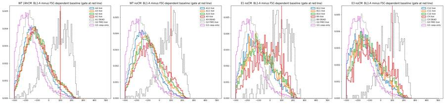
106
thinking
SYTOX+ dead cells read modestly higher on BL1 than live cells at matched size, and their BL1 p95 sits near 400 in every well, which hints at a size-dependent ceiling. I'm checking whether the BL1 signal is being truncated.
107
tool call · Bash
cd /task; cat > work/ceiling.py <<'EOF'
import pickle, numpy as np, pandas as pd
import matplotlib; matplotlib.use('Agg'); import matplotlib.pyplot as plt
from matplotlib.colors import LogNorm
d=pickle.load(open('/task/work/data.pkl','rb'))
allc=pd.concat([d[w] for w in d if w[0] in 'ABCDEF'])
g2=d['G2']
fig,axes=plt.subplots(2,4,figsize=(32,14))
ax=axes[0,0]; ax.hist2d(allc['FSC-A'],allc['BL1-A'],bins=200,range=[[0,7.2e5],[0,900]],norm=LogNorm()); ax.set_title('pooled A-F: FSC-A vs BL1-A')
ax=axes[0,1]; ax.hist2d(allc['FSC-H'],allc['BL1-H'],bins=200,range=[[0,4.5e5],[0,750]],norm=LogNorm()); ax.set_title('FSC-H vs BL1-H')
ax=axes[0,2]; ax.hist2d(allc['BL1-H'],allc['BL1-A'],bins=200,range=[[0,750],[0,900]],norm=LogNorm()); ax.set_title('BL1-H vs BL1-A')
ax=axes[0,3]; ax.hist2d(allc['SSC-A'],allc['BL1-A'],bins=200,range=[[0,1.05e6],[0,900]],norm=LogNorm()); ax.set_title('SSC-A vs BL1-A')
ax=axes[1,0]; ax.hist2d(allc['BL2-A'].clip(-5e3,2e4),allc['BL1-A'],bins=200,range=[[-5e3,2e4],[0,900]],norm=LogNorm()); ax.set_title('BL2-A vs BL1-A (pooled)')
ax=axes[1,1]; ax.hist2d(g2['BL2-A'].clip(-5e3,2e5),g2['BL1-A'],bins=200,range=[[-5e3,2e5],[0,900]],norm=LogNorm()); ax.set_title('G2 L/D only: BL2-A vs BL1-A')
ax=axes[1,2]; ax.hist(allc['BL1-A'],bins=np.arange(0,900,2),log=True); ax.set_title('BL1-A pooled hist')
ax=axes[1,3]; ax.hist2d(allc['FSC-A'],allc['BL2-H'],bins=200,range=[[0,7.2e5],[0,5000]],norm=LogNorm()); ax.set_title('FSC-A vs BL2-H')
plt.tight_layout(); plt.savefig('/task/work/ceiling.png',dpi=40)
print('BL1-W unique', np.unique(allc['BL1-W'])[:10], 'BL2-W >0 frac', (allc['BL2-W']>0).mean())
print('FSC-W range', allc['FSC-W'].min(), allc['FSC-W'].max())
EOF
python3 work/ceiling.py108
tool output
BL1-W unique [0. 1. 5.] BL2-W >0 frac 0.22728858450870296 FSC-W range 32.0 375.0
109
tool call · Read
{
"file_path": "/task/work/ceiling.png"
}110
tool output
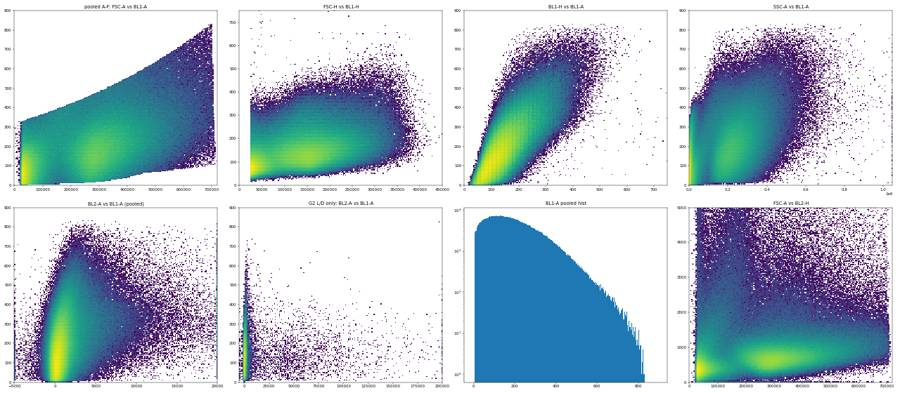
112
thinking
The pooled FSC-A vs BL1-A plot has a sharp, linear upper edge and a sharp lower edge, which suggests BL1 is clipped by the integration window near the noise floor. Next I'll check whether that ceiling tracks pulse width, and whether the dead-cell BL1 rise is SYTOX spillover, using G2 which has no caspase reagent.
113
tool call · Bash
cd /task; cat > work/ceiling2.py <<'EOF'
import pickle, numpy as np, pandas as pd
from matplotlib.path import Path
d=pickle.load(open('/task/work/data.pkl','rb'))
exec(open('/task/work/gatedefs.py').read())
allc=pd.concat([d[w] for w in d if w[0] in 'ABCDEF'])
# ceiling: max BL1-A per FSC-A bin and per FSC-W bin
for col,edges in [('FSC-A',np.arange(50e3,7.2e5,100e3)),('FSC-W',np.arange(40,300,30))]:
out=[]
for lo in edges:
hi=lo+(edges[1]-edges[0]); m=(allc[col]>=lo)&(allc[col]<hi)
out.append(f"{lo:.0f}:{allc.loc[m,'BL1-A'].max():.0f}/{np.percentile(allc.loc[m,'BL1-A'],99.9):.0f}")
print(col,'max/p99.9 BL1-A:',' '.join(out))
print('corr BL1-A max ceiling: overall max', allc['BL1-A'].max(), 'events > 830:', (allc['BL1-A']>830).sum(), 'of', len(allc))
def pops(df):
inC=Path(CELLS).contains_points(df[['FSC-A','SSC-A']].values); c=df[inC]
inS=Path(SING).contains_points(c[['FSC-A','FSC-H']].values); s=c[inS]
inL=Path(LIVE).contains_points(s[['FSC-A','BL2-A']].values); return s[inL], s[~inL]
for w in ['G2','G6','A4','A1']:
l,dd=pops(d[w]); m1=(l['FSC-A']>120e3)&(l['FSC-A']<250e3); m2=(dd['FSC-A']>120e3)&(dd['FSC-A']<250e3)
print(w,'FSC120-250k live BL1 med',np.median(l.loc[m1,'BL1-A']),'| dead med',np.median(dd.loc[m2,'BL1-A']),'n dead',m2.sum(), '| dead BL2 med', np.median(dd.loc[m2,'BL2-A']))
EOF
python3 work/ceiling2.py114
tool output
FSC-A max/p99.9 BL1-A: 50000:390/379 150000:448/438 250000:514/496 350000:590/571 450000:677/657 550000:776/757 650000:830/821 FSC-W max/p99.9 BL1-A: 40:441/338 70:741/417 100:795/535 130:828/682 160:830/789 190:828/800 220:804/798 250:810/796 280:812/802 corr BL1-A max ceiling: overall max 830.0 events > 830: 0 of 1026202 G2 FSC120-250k live BL1 med 113.0 | dead med 130.0 n dead 2229 | dead BL2 med 37634.0 G6 FSC120-250k live BL1 med 165.0 | dead med 280.0 n dead 108 | dead BL2 med 4294.5 A4 FSC120-250k live BL1 med 140.0 | dead med 261.5 n dead 638 | dead BL2 med 5945.5 A1 FSC120-250k live BL1 med 155.0 | dead med 289.0 n dead 687 | dead BL2 med 5319.0
116
thinking
Neither 1,026,202 events in wells A–F reach BL1-A = 830, and in G2 the dead-cell lift is only +17 in BL1, so the +130 in dual-stained wells comes from the CellEvent reagent rather than spillover. I'm checking whether BL1-H saturation explains the area ceiling.
117
tool call · Bash
cd /task; python3 -c "
import pickle, numpy as np, pandas as pd
d=pickle.load(open('/task/work/data.pkl','rb'))
allc=pd.concat([d[w] for w in d])
h=allc['BL1-H']
print('BL1-H top values counts:'); vc=h.round().value_counts().sort_index(); print(vc.tail(15).to_string())
print('BL1-H pct',np.percentile(h,[50,99,99.9,99.99]))
print('BL2-H top', np.sort(allc['BL2-H'].values)[-5:], 'BL2-A top', np.sort(allc['BL2-A'].values)[-5:])
print('BL1-A floor count at 4:', (allc['BL1-A']==4).sum(), 'values<=10', (allc['BL1-A']<=10).sum())
print('FSC-H max', allc['FSC-H'].max(), 'SSC-H at max', (allc['SSC-H']>=1048575).sum(), 'SSC-A at max', (allc['SSC-A']>=1048575).sum(), len(allc))
"
118
tool output
BL1-H top values counts: BL1-H 707.0 1 714.0 1 724.0 1 727.0 1 733.0 1 745.0 1 747.0 1 749.0 1 775.0 1 780.0 1 913.0 1 933.0 1 953.0 1 1009.0 1 1292.0 1 BL1-H pct [133. 356. 452. 545.] BL2-H top [143283. 151052. 160871. 168855. 197842.] BL2-A top [352894. 355905. 364325. 394541. 469842.] BL1-A floor count at 4: 897 values<=10 9728 FSC-H max 461733.0 SSC-H at max 12 SSC-A at max 100 1150506
120
thinking
BL1-H shows no pile-up, so the cause isn't height saturation; BL1-A sits cleanly within 4–830 and the gate design looks solid. Next I'll build the single FlowKit GatingStrategy, export it, reload it, and generate counts from the reloaded XML.
121
tool call · Bash
cd /task; cat > work/build_gates.py <<'EOF'
import flowkit as fk, pandas as pd, numpy as np
from flowkit import Dimension
from flowkit.gates import PolygonGate
U='uncompensated'
def dim(ch): return Dimension(ch, compensation_ref=U)
g=fk.GatingStrategy()
# 1. Cells: FSC-A x SSC-A, excludes low-FSC debris / apoptotic fragments
CELLS=[(90e3,45e3),(220e3,45e3),(1.05e6,215e3),(1.05e6,1.05e6),(450e3,1.05e6),(90e3,200e3)]
g.add_gate(PolygonGate('Cells',[dim('FSC-A'),dim('SSC-A')],CELLS),gate_path=('root',))
# 2. Singlets: FSC-A x FSC-H, lower edge on FSC-H/FSC-A = 0.37 (doublets fall below)
SING=[(60e3,22e3),(1.05e6,389e3),(1.05e6,1.05e6),(380e3,1.05e6),(60e3,80e3)]
g.add_gate(PolygonGate('Singlets',[dim('FSC-A'),dim('FSC-H')],SING),gate_path=('root','Cells'))
# 3. Live / Dead: FSC-A x BL2-A (SYTOX AAdvanced); boundary slants 2000 @ FSC 60k -> 7000 @ FSC 720k (extended linearly)
def bnd(x): return 2000+(x-60e3)*(5000/660e3)
LIVE=[(60e3,-300e3),(1.05e6,-300e3),(1.05e6,bnd(1.05e6)),(60e3,bnd(60e3))]
DEAD=[(60e3,bnd(60e3)),(1.05e6,bnd(1.05e6)),(1.05e6,1.1e6),(60e3,1.1e6)]
g.add_gate(PolygonGate('Live',[dim('FSC-A'),dim('BL2-A')],LIVE),gate_path=('root','Cells','Singlets'))
g.add_gate(PolygonGate('Dead',[dim('FSC-A'),dim('BL2-A')],DEAD),gate_path=('root','Cells','Singlets'))
# 4. Caspase+ (CellEvent, BL1-A): above line fitted to 99.5th pct of BL1-A vs FSC-A in caspase-FMO control G2: BL1 = 100 + FSC/1030
def cl(x): return 100+x/1030
CASP=[(60e3,cl(60e3)),(1.05e6,cl(1.05e6)),(1.05e6,1.1e6),(60e3,1.1e6)]
g.add_gate(PolygonGate('Casp_pos',[dim('FSC-A'),dim('BL1-A')],CASP),gate_path=('root','Cells','Singlets','Live'))
g.add_gate(PolygonGate('Casp_pos_all',[dim('FSC-A'),dim('BL1-A')],CASP),gate_path=('root','Cells','Singlets'))
with open('/task/outputs/gates.xml','wb') as fh: fk.export_gatingml(g,fh)
g2=fk.parse_gating_xml('/task/outputs/gates.xml')
print(g2.get_gate_hierarchy(output='ascii'))
EOF
python3 work/build_gates.py122
tool output (error)
Exit code 1
Traceback (most recent call last):
File "/task/work/build_gates.py", line 3, in <module>
from flowkit.gates import PolygonGate
ModuleNotFoundError: No module named 'flowkit.gates'123
tool call · Bash
cd /task; python3 -c "import flowkit as fk; print(fk.__version__); print([x for x in dir(fk) if not x.startswith('_')]); print(dir(fk.gates) if hasattr(fk,'gates') else 'no gates attr')"124
tool output
1.2.3 ['Dimension', 'GatingStrategy', 'Matrix', 'QuadrantDivider', 'RatioDimension', 'Sample', 'Session', 'Workspace', 'exceptions', 'export_gatingml', 'extract_wsp_sample_data', 'gates', 'generate_transforms', 'load_samples', 'parse_gating_xml', 'parse_wsp', 'read_multi_dataset_fcs', 'transforms'] ['BooleanGate', 'EllipsoidGate', 'PolygonGate', 'Quadrant', 'QuadrantGate', 'RectangleGate', '__all__', '__builtins__', '__cached__', '__doc__', '__file__', '__loader__', '__name__', '__package__', '__path__', '__spec__', '_base_gate', '_gates', '_gml_gates', '_wsp_gates']
125
tool call · Bash
cd /task; sed -i 's/^from flowkit.gates import PolygonGate/PolygonGate=fk.gates.PolygonGate/' work/build_gates.py; python3 work/build_gates.py
126
tool output
root
╰── Cells
╰── Singlets
├── Live
│ ╰── Casp_pos
├── Dead
╰── Casp_pos_all128
agent
The gating strategy exports and reloads. Now I'll gate all 78 files with the **reloaded** XML and write `counts.csv`.
129
tool call · Bash
cd /task; cat > work/make_counts.py <<'EOF'
import flowkit as fk, pandas as pd, numpy as np
lay=pd.read_csv('/task/inputs/plate_layout.csv')
g=fk.parse_gating_xml('/task/outputs/gates.xml')
POPS=[('Cells','cells','all_events'),('Singlets','singlets','Cells'),('Live','live','Singlets'),('Dead','other','Singlets'),
('Casp_pos','marker_positive','Live'),('Casp_pos_all','other','Singlets')]
rows=[]
for _,r in lay.iterrows():
s=fk.Sample('/task/inputs/raw/'+r.file)
res=g.gate_sample(s)
cnt={'all_events':s.event_count}
rows.append(dict(file=r.file,well=r.well,population='all_events',role='other',parent='none',count=s.event_count,pct_of_parent=''))
for name,role,parent in POPS:
c=int(res.get_gate_count(name)); cnt[name]=c
pc=cnt[parent]; rows.append(dict(file=r.file,well=r.well,population=name,role=role,parent=parent,count=c,pct_of_parent=round(100*c/pc,4) if pc>0 else ''))
assert cnt['Live']+cnt['Dead']==cnt['Singlets'], (r.well,cnt)
df=pd.DataFrame(rows); df.to_csv('/task/outputs/counts.csv',index=False)
print(df.head(8).to_string()); print(len(df), df.file.nunique())
EOF
python3 work/make_counts.py130
tool output
file well population role parent count pct_of_parent 0 Caspase-assay-2-mlk(1)_caspase_Group_A1.fcs A1 all_events other none 30920 1 Caspase-assay-2-mlk(1)_caspase_Group_A1.fcs A1 Cells cells all_events 21249 68.7225 2 Caspase-assay-2-mlk(1)_caspase_Group_A1.fcs A1 Singlets singlets Cells 20011 94.1738 3 Caspase-assay-2-mlk(1)_caspase_Group_A1.fcs A1 Live live Singlets 18849 94.1932 4 Caspase-assay-2-mlk(1)_caspase_Group_A1.fcs A1 Dead other Singlets 1162 5.8068 5 Caspase-assay-2-mlk(1)_caspase_Group_A1.fcs A1 Casp_pos marker_positive Live 1155 6.1276 6 Caspase-assay-2-mlk(1)_caspase_Group_A1.fcs A1 Casp_pos_all other Singlets 1675 8.3704 7 Caspase-assay-2-mlk(1)_caspase_Group_A2.fcs A2 all_events other none 31266 546 78
132
agent
Counts reconcile (Live + Dead = Singlets in every file). Now per-well metrics, replicate agreement, and condition means.
133
tool call · Bash
cd /task; cat > work/analyse.py <<'EOF'
import pandas as pd, numpy as np
lay=pd.read_csv('/task/inputs/plate_layout.csv')
c=pd.read_csv('/task/outputs/counts.csv')
p=c.pivot(index='well',columns='population',values='count')
w=lay.set_index('well').join(p)
w['pct_casp_live']=100*w.Casp_pos/w.Live
w['pct_dead']=100*w.Dead/w.Singlets
w['pct_casp_all']=100*w.Casp_pos_all/w.Singlets
cmmap={'24hr conditioned media':'24hCM','48hr conditioned media':'48hCM','No conditioned media':'noCM'}
w['cm']=w.conditioned_media.map(cmmap)
w['dose']=w.camptothecin
ctrl_names={'G1':'CTRL_WT_unstained_G1','G2':'CTRL_WT_SYTOX_only_G2','G3':'CTRL_WT_CellEvent_only_G3','G4':'E1_untreated_G4','G5':'E3_untreated_G5','G6':'WT_untreated_G6'}
w['condition']=[ctrl_names.get(i, f"{r.cell_line}_{r.dose}_{r.cm}") for i,r in w.iterrows()]
w.to_csv('/task/work/wells.csv')
pd.set_option('display.width',220)
t=w[w.index.str[0]!='G']
for m in ['pct_casp_live','pct_dead','Live']:
print('\n',m)
print(t.pivot_table(index=['cell_line','dose'],columns='cm',values=m,aggfunc=lambda x: '/'.join(f'{v:.1f}' for v in x)).to_string())
EOF
python3 work/analyse.py134
tool output
pct_casp_live
cm 24hCM 48hCM noCM
cell_line dose
E1 10uM 17.1/10.3 11.7/10.3 13.5/13.7
2uM 8.1/7.7 7.2/6.4 7.0/7.1
5uM 9.0/7.5 8.0/8.8 8.6/5.1
DMSO 3.2/4.2 3.8/4.0 4.3/4.1
E3 10uM 9.9/9.1 10.2/7.5 11.3/11.4
2uM 4.1/4.7 4.4/4.6 4.8/5.9
5uM 5.8/4.0 6.8/5.5 6.3/5.6
DMSO 4.1/3.2 3.3/4.1 3.0/3.3
WT 10uM 6.1/5.0 7.3/5.8 9.7/5.8
2uM 6.3/5.2 5.8/5.4 5.4/5.1
5uM 6.1/5.1 5.5/4.8 6.7/4.9
DMSO 2.8/2.6 2.7/2.5 2.4/2.6
pct_dead
cm 24hCM 48hCM noCM
cell_line dose
E1 10uM 0.1/12.7 22.7/24.4 28.1/31.8
2uM 6.2/9.4 10.8/11.7 12.0/9.2
5uM 10.1/8.7 11.9/13.6 14.2/13.9
DMSO 4.8/9.0 11.0/14.4 7.6/5.6
E3 10uM 20.1/18.1 40.9/20.4 32.8/18.7
2uM 14.3/11.8 16.7/9.2 12.4/12.1
5uM 14.8/9.6 22.6/10.0 20.0/10.7
DMSO 19.1/11.6 19.6/13.3 12.0/11.2
WT 10uM 5.8/6.1 10.2/9.1 7.9/9.1
2uM 4.6/5.0 5.6/6.3 5.1/3.7
5uM 5.3/4.4 6.7/6.1 6.3/5.2
DMSO 3.5/4.5 3.9/7.4 4.7/4.8
Live
cm 24hCM 48hCM noCM
cell_line dose
E1 10uM 4122.0/2468.0 1828.0/1219.0 1102.0/970.0
2uM 6012.0/4400.0 5712.0/4471.0 4568.0/4209.0
5uM 4371.0/4430.0 4743.0/2949.0 3511.0/2091.0
DMSO 9710.0/7595.0 7915.0/5222.0 7215.0/8568.0
E3 10uM 3100.0/2244.0 913.0/1060.0 1345.0/1057.0
2uM 4393.0/4968.0 3821.0/4975.0 4665.0/5692.0
5uM 5060.0/5184.0 2544.0/3263.0 3624.0/4088.0
DMSO 5135.0/7412.0 4924.0/6950.0 9259.0/7909.0
WT 10uM 18849.0/12998.0 8466.0/4071.0 10093.0/5233.0
2uM 20787.0/14865.0 16064.0/12943.0 22891.0/19326.0
5uM 19027.0/16673.0 15519.0/10126.0 15698.0/12387.0
DMSO 30805.0/21318.0 26259.0/19294.0 26963.0/21435.0136
agent
Clear picture now. Before the figure, a few derived numbers for the report: replicate SDs, KO–WT gaps, "fraction restored", and recovery of live cells at 10 µM relative to DMSO.
137
tool call · Bash
cd /task; cat > work/stats.py <<'EOF'
import pandas as pd, numpy as np
w=pd.read_csv('/task/work/wells.csv',index_col=0)
w=w[w.index!='B1'] # excluded (no SYTOX)
t=w[w.index.str[0]!='G']
g=t.groupby(['cell_line','dose','cm'])
s=g.agg(n=('pct_casp_live','size'),casp=('pct_casp_live','mean'),casp_sd=('pct_casp_live','std'),dead=('pct_dead','mean'),dead_sd=('pct_dead','std'),live=('Live','sum'))
print(s.round(2).to_string())
pooled=np.sqrt((s.casp_sd.dropna()**2).mean()); print('pooled within-condition SD of pct_casp_live (n=2 conditions):',round(pooled,2))
print('pooled SD of pct_dead', round(np.sqrt((s.dead_sd.dropna()**2).mean()),2))
m=s.casp
print('\nKO-WT gap and fraction restored (=(KO_noCM-KO_CM)/(KO_noCM-WT_noCM))')
for dose in ['DMSO','2uM','5uM','10uM']:
for ko in ['E1','E3']:
gap=m[(ko,dose,'noCM')]-m[('WT',dose,'noCM')]
for cm in ['24hCM','48hCM']:
dlt=m[(ko,dose,cm)]-m[(ko,dose,'noCM')]; wtd=m[('WT',dose,cm)]-m[('WT',dose,'noCM')]
print(f"{dose:5s} {ko} gap(KO-WT,noCM)={gap:+.2f} KO {cm}-noCM={dlt:+.2f} WT {cm}-noCM={wtd:+.2f} frac_restored={-dlt/gap if abs(gap)>0 else np.nan:+.2f} KO{cm}-WT{cm}={m[(ko,dose,cm)]-m[('WT',dose,cm)]:+.2f}")
print('\nRecovery of live singlets at 10uM relative to DMSO (sum over wells; E1 24hCM uses E1/E4 only)')
for line in ['WT','E1','E3']:
for cm in ['24hCM','48hCM','noCM']:
a=t[(t.cell_line==line)&(t.dose=='10uM')&(t.cm==cm)]; b=t[(t.cell_line==line)&(t.dose=='DMSO')&(t.cm==cm)]
if line=='E1' and cm=='24hCM': b=b[b.index=='E4']
print(line,cm,round(a.Live.sum()/b.Live.sum(),3), list(a.index), list(b.index))
print('\nRow pairs (first vs second replicate row), mean pct_casp_live and pct_dead over CPT wells:')
for r1,r2 in [('A','D'),('B','E'),('C','F')]:
a=t[t.index.str[0]==r1]; b=t[t.index.str[0]==r2]
print(r1,r2, 'casp', round(a.pct_casp_live.mean(),2), round(b.pct_casp_live.mean(),2), 'dead', round(a.pct_dead.mean(),2), round(b.pct_dead.mean(),2))
s.to_csv('/task/work/cond_stats.csv')
EOF
python3 work/stats.py138
tool output
n casp casp_sd dead dead_sd live
cell_line dose cm
E1 10uM 24hCM 1 10.33 NaN 12.70 NaN 2468
48hCM 2 10.98 1.03 23.57 1.22 3047
noCM 2 13.62 0.13 29.93 2.63 2072
2uM 24hCM 2 7.90 0.34 7.78 2.30 10412
48hCM 2 6.79 0.52 11.28 0.61 10183
noCM 2 7.06 0.02 10.61 1.97 8777
5uM 24hCM 2 8.28 1.04 9.37 0.98 8801
48hCM 2 8.39 0.56 12.74 1.21 7692
noCM 2 6.85 2.52 14.04 0.23 5602
DMSO 24hCM 2 3.66 0.72 6.94 2.97 17305
48hCM 2 3.90 0.19 12.66 2.39 13137
noCM 2 4.20 0.17 6.62 1.38 15783
E3 10uM 24hCM 2 9.51 0.60 19.09 1.44 5344
48hCM 2 8.87 1.87 30.66 14.49 1973
noCM 2 11.33 0.04 25.75 9.99 2402
2uM 24hCM 2 4.38 0.44 13.03 1.75 9361
48hCM 2 4.51 0.13 12.95 5.35 8796
noCM 2 5.35 0.74 12.26 0.22 10357
5uM 24hCM 2 4.90 1.23 12.17 3.69 10244
48hCM 2 6.13 0.95 16.33 8.90 5807
noCM 2 5.96 0.47 15.38 6.58 7712
DMSO 24hCM 2 3.64 0.64 15.39 5.32 12547
48hCM 2 3.71 0.56 16.46 4.41 11874
noCM 2 3.15 0.24 11.59 0.62 17168
WT 10uM 24hCM 2 5.55 0.81 5.93 0.18 31847
48hCM 2 6.55 1.04 9.68 0.78 12537
noCM 2 7.73 2.72 8.47 0.83 15326
2uM 24hCM 2 5.74 0.84 4.80 0.31 35652
48hCM 2 5.62 0.26 5.92 0.52 29007
noCM 2 5.23 0.23 4.41 1.05 42217
5uM 24hCM 2 5.58 0.71 4.85 0.60 35700
48hCM 2 5.18 0.48 6.40 0.38 25645
noCM 2 5.80 1.27 5.74 0.79 28085
DMSO 24hCM 2 2.71 0.15 4.01 0.67 52123
48hCM 2 2.59 0.11 5.61 2.48 45553
noCM 2 2.54 0.14 4.76 0.02 48398
pooled within-condition SD of pct_casp_live (n=2 conditions): 0.93
pooled SD of pct_dead 4.05
KO-WT gap and fraction restored (=(KO_noCM-KO_CM)/(KO_noCM-WT_noCM))
DMSO E1 gap(KO-WT,noCM)=+1.66 KO 24hCM-noCM=-0.54 WT 24hCM-noCM=+0.17 frac_restored=+0.33 KO24hCM-WT24hCM=+0.95
DMSO E1 gap(KO-WT,noCM)=+1.66 KO 48hCM-noCM=-0.30 WT 48hCM-noCM=+0.05 frac_restored=+0.18 KO48hCM-WT48hCM=+1.31
DMSO E3 gap(KO-WT,noCM)=+0.61 KO 24hCM-noCM=+0.48 WT 24hCM-noCM=+0.17 frac_restored=-0.79 KO24hCM-WT24hCM=+0.92
DMSO E3 gap(KO-WT,noCM)=+0.61 KO 48hCM-noCM=+0.55 WT 48hCM-noCM=+0.05 frac_restored=-0.90 KO48hCM-WT48hCM=+1.12
2uM E1 gap(KO-WT,noCM)=+1.84 KO 24hCM-noCM=+0.83 WT 24hCM-noCM=+0.52 frac_restored=-0.45 KO24hCM-WT24hCM=+2.15
2uM E1 gap(KO-WT,noCM)=+1.84 KO 48hCM-noCM=-0.27 WT 48hCM-noCM=+0.39 frac_restored=+0.15 KO48hCM-WT48hCM=+1.17
2uM E3 gap(KO-WT,noCM)=+0.12 KO 24hCM-noCM=-0.96 WT 24hCM-noCM=+0.52 frac_restored=+8.06 KO24hCM-WT24hCM=-1.36
2uM E3 gap(KO-WT,noCM)=+0.12 KO 48hCM-noCM=-0.83 WT 48hCM-noCM=+0.39 frac_restored=+6.97 KO48hCM-WT48hCM=-1.10
5uM E1 gap(KO-WT,noCM)=+1.05 KO 24hCM-noCM=+1.43 WT 24hCM-noCM=-0.21 frac_restored=-1.36 KO24hCM-WT24hCM=+2.69
5uM E1 gap(KO-WT,noCM)=+1.05 KO 48hCM-noCM=+1.54 WT 48hCM-noCM=-0.62 frac_restored=-1.46 KO48hCM-WT48hCM=+3.21
5uM E3 gap(KO-WT,noCM)=+0.16 KO 24hCM-noCM=-1.06 WT 24hCM-noCM=-0.21 frac_restored=+6.57 KO24hCM-WT24hCM=-0.68
5uM E3 gap(KO-WT,noCM)=+0.16 KO 48hCM-noCM=+0.17 WT 48hCM-noCM=-0.62 frac_restored=-1.05 KO48hCM-WT48hCM=+0.95
10uM E1 gap(KO-WT,noCM)=+5.88 KO 24hCM-noCM=-3.28 WT 24hCM-noCM=-2.18 frac_restored=+0.56 KO24hCM-WT24hCM=+4.78
10uM E1 gap(KO-WT,noCM)=+5.88 KO 48hCM-noCM=-2.64 WT 48hCM-noCM=-1.18 frac_restored=+0.45 KO48hCM-WT48hCM=+4.43
10uM E3 gap(KO-WT,noCM)=+3.59 KO 24hCM-noCM=-1.81 WT 24hCM-noCM=-2.18 frac_restored=+0.50 KO24hCM-WT24hCM=+3.96
10uM E3 gap(KO-WT,noCM)=+3.59 KO 48hCM-noCM=-2.46 WT 48hCM-noCM=-1.18 frac_restored=+0.68 KO48hCM-WT48hCM=+2.31
Recovery of live singlets at 10uM relative to DMSO (sum over wells; E1 24hCM uses E1/E4 only)
WT 24hCM 0.611 ['A1', 'D1'] ['A4', 'D4']
WT 48hCM 0.275 ['A5', 'D5'] ['A8', 'D8']
WT noCM 0.317 ['A9', 'D9'] ['A12', 'D12']
E1 24hCM 0.325 ['E1'] ['E4']
E1 48hCM 0.232 ['B5', 'E5'] ['B8', 'E8']
E1 noCM 0.131 ['B9', 'E9'] ['B12', 'E12']
E3 24hCM 0.426 ['C1', 'F1'] ['C4', 'F4']
E3 48hCM 0.166 ['C5', 'F5'] ['C8', 'F8']
E3 noCM 0.14 ['C9', 'F9'] ['C12', 'F12']
Row pairs (first vs second replicate row), mean pct_casp_live and pct_dead over CPT wells:
A D casp 5.57 4.57 dead 5.8 5.96
B E casp 7.68 7.43 dead 12.67 13.7
C F casp 6.17 5.74 dead 20.45 13.06140
thinking
Controls show CM lowers the KO readout by only ≤1.5 pp beyond the WT effect, with KO+CM still 2.3–4.8 pp above WT+CM and no CM effect in DMSO. I'm writing the CSV deliverables first, then the figure.
141
tool call · Bash
cd /task; cat > work/write_tables.py <<'EOF'
import pandas as pd, numpy as np, json
w=pd.read_csv('/task/work/wells.csv',index_col=0)
lay=pd.read_csv('/task/inputs/plate_layout.csv').set_index('well')
qc=pd.read_csv('/task/work/qc.csv').set_index('well')
# ---------- flags ----------
flags={}
b1=qc.loc['B1']; others=qc[(~qc.index.isin(['B1','G1','G3']))]
flags['B1']=('other',f"SYTOX AAdvanced appears to be missing: BL2-A 1st percentile = {b1.bl2_p1:.0f} vs {others.bl2_p1.max():.0f} to {others.bl2_p1.min():.0f} in every other dual-stained well; {b1.bl2_neg_frac:.2f}% of events have BL2-A < -500 (other stained wells 1.07-9.57%); this is the free-dye noise pattern of unstained G1 (p1 = -51) and CellEvent-only G3 (p1 = -57). Dead gate = {w.loc['B1','pct_dead']:.2f}% of singlets vs {w.loc['E1','pct_dead']:.1f}% in replicate E1, so the Live gate cannot remove dead cells and Casp_pos/Live is inflated ({w.loc['B1','pct_casp_live']:.1f}% vs {w.loc['E1','pct_casp_live']:.1f}% in E1). Scatter matches a camptothecin-treated E1 well (52% of events FSC-A < 150k), so it is a missed stain, not a swapped sample.",'exclude')
for well in ['B9','E9','C5','F5','F9','E5','C9']:
L=int(w.loc[well,'Live']); k=int(w.loc[well,'Casp_pos']); p=k/L
extra=''
if well=='C5': extra=f" Replicate disagreement for dead fraction: C5 {w.loc['C5','pct_dead']:.1f}% vs F5 {w.loc['F5','pct_dead']:.1f}%."
flags[well]=('too_few_events',f"Only {L} live singlets ({int(w.loc[well,'all_events'])} total events, ~140 uL acquired as for every well; the low count is camptothecin-induced cell loss, not a fluidics fault). Casp_pos = {k} events ({100*p:.1f}%), binomial SD ~{100*np.sqrt(p*(1-p)/L):.1f} percentage points.{extra}",'keep_with_note')
flags['A9']=('other',f"Replicate disagreement: Casp_pos/Live = {w.loc['A9','pct_casp_live']:.2f}% vs {w.loc['D9','pct_casp_live']:.2f}% in replicate D9 (difference {w.loc['A9','pct_casp_live']-w.loc['D9','pct_casp_live']:.1f} percentage points, about 4x the pooled replicate SD of 0.93). No acquisition fault: stable event rate, {int(w.loc['A9','Live'])} live singlets. Kept; the WT_10uM_noCM mean has a large SD.",'keep_with_note')
flags['E10']=('other',f"Replicate disagreement: Casp_pos/Live = {w.loc['E10','pct_casp_live']:.2f}% vs {w.loc['B10','pct_casp_live']:.2f}% in replicate B10; {int(w.loc['E10','Live'])} live singlets. No acquisition fault found (first event at 0.54 ms, stable rate). Kept.",'keep_with_note')
g3=w.loc['G3']; g1=w.loc['G1']
flags['G3']=('bad_control',f"The CellEvent-only control is untreated WT and has no caspase-positive population: BL1-A max = 769 and 99th percentile = 500, vs 773 and 437 in unstained G1. Only {g3.pct_casp_live:.2f}% are above the FMO-based gate (G1 {g1.pct_casp_live:.2f}%). It shows only a uniform reagent background (live BL1-A median 171 vs 135 in G1), so it cannot set or validate a caspase-positive gate. There was no apoptosis-induced positive control on the plate. Used only as a background reference.",'keep_with_note')
flags['G2']=('none',f"OK as the SYTOX-positive control and the caspase FMO. Note: its dead cells are much brighter (BL2-A median ~37,600) than dead cells in the dual-stained test wells (~4,000-6,000), so the live/dead boundary was placed from the test-well structure.",'keep')
flags['G1']=('none','','keep')
for well in ['G4','G5','G6']:
flags[well]=('none','Untreated reference. Conditioned-media status is not stated on the plate map, so this well is not used in CM comparisons.','keep')
rows=[]
for well,r in lay.iterrows():
it,ev,dec=flags.get(well,('none','','keep'))
rows.append(dict(file=r.file,well=well,issue_type=it,evidence=ev,decision=dec))
fl=pd.DataFrame(rows); fl.to_csv('/task/outputs/flags.csv',index=False)
excl=list(fl[fl.decision=='exclude'].well)
print(fl[fl.issue_type!='none'][['well','issue_type','decision']].to_string()); print('excluded',excl)
# ---------- condition summary ----------
wu=w[~w.index.isin(excl)].copy()
order=[]
for line in ['WT','E1','E3']:
for dose in ['DMSO','2uM','5uM','10uM']:
for cm in ['noCM','24hCM','48hCM']: order.append(f'{line}_{dose}_{cm}')
order+=['WT_untreated_G6','E1_untreated_G4','E3_untreated_G5','CTRL_WT_unstained_G1','CTRL_WT_SYTOX_only_G2','CTRL_WT_CellEvent_only_G3']
MD="100 x Casp_pos / Live per well (Casp_pos = Live events with BL1-A [CellEvent caspase-3/7] above the FSC-dependent line BL1-A = 100 + FSC-A/1030; Live = SYTOX AAdvanced-negative singlets: BL2-A below the line 2000 + (FSC-A - 60000) x 5000/660000; Singlets within Cells); mean and SD across wells"
cs=[]
for cnd in order:
sub=wu[wu.condition==cnd]
vals=sub.pct_casp_live.values
cs.append(dict(condition=cnd,wells=';'.join(sub.index),n_wells_used=len(sub),mean=round(vals.mean(),3),sd=round(vals.std(ddof=1),3) if len(sub)>1 else '',metric_definition=MD,normalisation_applied='none'))
cs=pd.DataFrame(cs); cs.to_csv('/task/outputs/condition_summary.csv',index=False)
print(cs[['condition','wells','n_wells_used','mean','sd']].to_string())
# secondary metrics per well (supporting, not graded)
sec=w[['condition','cell_line','dose','cm','all_events','Cells','Singlets','Live','Dead','Casp_pos','Casp_pos_all','pct_casp_live','pct_dead','pct_casp_all']].copy()
sec['excluded']=sec.index.isin(excl)
sec.round(3).to_csv('/task/outputs/per_well_metrics.csv')
EOF
python3 work/write_tables.py142
tool output
well issue_type decision
8 A9 other keep_with_note
12 B1 other exclude
20 B9 too_few_events keep_with_note
28 C5 too_few_events keep_with_note
32 C9 too_few_events keep_with_note
52 E5 too_few_events keep_with_note
56 E9 too_few_events keep_with_note
57 E10 other keep_with_note
64 F5 too_few_events keep_with_note
68 F9 too_few_events keep_with_note
74 G3 bad_control keep_with_note
excluded ['B1']
condition wells n_wells_used mean sd
0 WT_DMSO_noCM A12;D12 2 2.540 0.142
1 WT_DMSO_24hCM A4;D4 2 2.715 0.151
2 WT_DMSO_48hCM A8;D8 2 2.590 0.107
3 WT_2uM_noCM A11;D11 2 5.226 0.227
4 WT_2uM_24hCM A3;D3 2 5.744 0.836
5 WT_2uM_48hCM A7;D7 2 5.617 0.262
6 WT_5uM_noCM A10;D10 2 5.798 1.269
7 WT_5uM_24hCM A2;D2 2 5.583 0.711
8 WT_5uM_48hCM A6;D6 2 5.181 0.483
9 WT_10uM_noCM A9;D9 2 7.735 2.723
10 WT_10uM_24hCM A1;D1 2 5.553 0.813
11 WT_10uM_48hCM A5;D5 2 6.555 1.037
12 E1_DMSO_noCM B12;E12 2 4.205 0.169
13 E1_DMSO_24hCM B4;E4 2 3.663 0.723
14 E1_DMSO_48hCM B8;E8 2 3.903 0.195
15 E1_2uM_noCM B11;E11 2 7.065 0.022
16 E1_2uM_24hCM B3;E3 2 7.896 0.336
17 E1_2uM_48hCM B7;E7 2 6.790 0.524
18 E1_5uM_noCM B10;E10 2 6.850 2.518
19 E1_5uM_24hCM B2;E2 2 8.277 1.043
20 E1_5uM_48hCM B6;E6 2 8.387 0.56
21 E1_10uM_noCM B9;E9 2 13.616 0.135
22 E1_10uM_24hCM E1 1 10.332
23 E1_10uM_48hCM B5;E5 2 10.981 1.027
24 E3_DMSO_noCM C12;F12 2 3.153 0.244
25 E3_DMSO_24hCM C4;F4 2 3.637 0.64
26 E3_DMSO_48hCM C8;F8 2 3.706 0.559
27 E3_2uM_noCM C11;F11 2 5.346 0.739
28 E3_2uM_24hCM C3;F3 2 4.382 0.435
29 E3_2uM_48hCM C7;F7 2 4.513 0.127
30 E3_5uM_noCM C10;F10 2 5.959 0.47
31 E3_5uM_24hCM C2;F2 2 4.901 1.23
32 E3_5uM_48hCM C6;F6 2 6.128 0.951
33 E3_10uM_noCM C9;F9 2 11.327 0.037
34 E3_10uM_24hCM C1;F1 2 9.513 0.597
35 E3_10uM_48hCM C5;F5 2 8.867 1.866
36 WT_untreated_G6 G6 1 1.739
37 E1_untreated_G4 G4 1 4.324
38 E3_untreated_G5 G5 1 3.393
39 CTRL_WT_unstained_G1 G1 1 0.477
40 CTRL_WT_SYTOX_only_G2 G2 1 0.597
41 CTRL_WT_CellEvent_only_G3 G3 1 1.582144
agent
Tables are written. Now the figure — I'll load the dataviz skill first as required.
145
tool call · Skill
{
"skill": "dataviz"
}146
tool output
Launching skill: dataviz
147
tool call · Bash
cd /tmp/claude-0/bundled-skills/2.1.322/f0c4652030014dd2eec3946c604db780/dataviz; sed -n 1,200p references/palette.md; sed -n 1,80p references/anti-patterns.md
148
tool output
# Reference palette
This is the **reference instance** of the data-viz method: every parameter the
method needs, filled in with a validated default palette. The rest of the skill
is system-agnostic - **to target your brand, substitute this file's values** and
re-run the validator. Nothing else changes.
## How to use these values
Everything below is plain hex. In an HTML chart, **define the slots you use as
CSS custom properties in a local `<style>` block** at the top of the file, then
reference them by role throughout - so the light/dark values swap in one place,
and the chart body is written against roles rather than raw hex:
```css
.viz-root {
color-scheme: light;
--surface-1: #fcfcfb; /* chart surface */
--text-primary: #0b0b0b;
--text-secondary: #52514e;
--series-1: #2a78d6; /* categorical slot 1 */
/* ...only the roles this chart uses */
}
@media (prefers-color-scheme: dark) {
:root:where(:not([data-theme="light"])) .viz-root {
color-scheme: dark;
--surface-1: #1a1a19;
--text-primary: #f0efec;
--text-secondary: #c3c2b7;
--series-1: #3987e5;
}
}
:root[data-theme="dark"] .viz-root {
color-scheme: dark;
--surface-1: #1a1a19;
--text-primary: #f0efec;
--text-secondary: #c3c2b7;
--series-1: #3987e5;
}
```
Declare the dark values under both scopes as above - the media query covers
the OS setting; the `data-theme` scope covers the viewer's theme toggle,
which must win both ways (the `:not(...)` guard lets a light stamp beat
OS-dark; `:where()` keeps the media block below the toggle scope).
## Categorical palette
Both modes are selected. The dark column is the same eight hues stepped for the
dark surface, not a separate palette:
| Slot | Hue | Light | Dark |
|------|-----|-------|------|
| 1 | blue | `#2a78d6` | `#3987e5` |
| 2 | orange | `#eb6834` | `#d95926` |
| 3 | aqua | `#1baf7a` | `#199e70` |
| 4 | yellow | `#eda100` | `#c98500` |
| 5 | magenta | `#e87ba4` | `#d55181` |
| 6 | green | `#008300` | `#008300` |
| 7 | violet | `#6250d6` | `#9085e9` |
| 8 | red | `#e34948` | `#e66767` |
This order passes every hard gate in both modes on the default *adjacent*
pairlist (stacks, bars, lines): worst adjacent CVD Delta E 9.1 light / 8.4 dark
(OKLab ×100, >=8 target), worst adjacent normal-vision Delta E 19.6 light / 19.3
dark (>=15 floor). Under `--pairs all` (scatter, bubble, choropleth, small
multiples) the full eight cannot clear the floors - with all 28 pairs in
play no ordering can (the pairlist no longer depends on order), and
re-stepping is off the table by the documented-palette rule - so those
chart forms carry a series cap: **the first three slots validate all-pairs
in both modes** (worst pair CVD Delta E 9.2 light / 9.4 dark, normal-vision 24.0
light / 20.9 dark - clear of the CVD warn band). Past three, fold to "Other" or
facet: the fourth slot puts yellow and orange on screen
together, and that pair fails the all-pairs floors (normal-vision 13.7
light; CVD 4.8 dark). Three light-mode slots (magenta, yellow, aqua)
sit below 3:1 contrast on the light surface: the **relief rule** applies (ship
visible direct labels or the table view). The dark steps were chosen for the
dark band (OKLCH L ~ 0.48-0.67, >= 3:1 on the dark surface) and validated as a
set. (Ordering history: adopted July 2026 for its more harmonious opening -
the same eight hues and steps as its predecessor, re-ordered, zero hex
changes. The predecessor validated its first FOUR slots all-pairs, with its
dark run in the 6-8 CVD warn band, so secondary encoding was required there;
this order deliberately trades that fourth slot - yellow now sits beside orange -
for better-looking leading colors. Revisit the trade if yellow<->orange
confusion shows up in real charts with four or more series; undoing it is a
pure re-order. Light slot 7 has since been lightened, `#4a3aa7` -> `#6250d6`
(August 2026); the adjacent-pair figures above are unchanged by that move, the
non-adjacent blue<->violet pair now sits below both floors under `--pairs all`
(normal-vision 10.5, CVD 4.5 - inside the range the series cap already
excludes), and the order enumeration was run with the earlier value.) When you
swap in your own ramps, hold your palette to the full gate.
The slot **ordering** is the CVD-safety mechanism, not cosmetic - candidate
orderings were enumerated and only those clearing every adjacent gate in both
modes kept (see `color-formula.md` § Themes); this default is one of the
passing orders, picked among them for its opening colors. When you swap in
your brand's hues, do the same: run the validator on candidate orderings and
choose only among the passing ones.
## Sequential hue
Default single hue: **blue**, light->dark. When two sequential contexts appear at
once, the second takes the next categorical slot's hue (orange), each as its own
one-hue ramp.
| step | hex | step | hex | step | hex | step | hex |
|---|---|---|---|---|---|---|---|
| 100 | `#cde2fb` | 250 | `#86b6ef` | 400 | `#3987e5` | 550 | `#1c5cab` |
| 150 | `#b7d3f6` | 300 | `#6da7ec` | 450 | `#2a78d6` | 600 | `#184f95` |
| 200 | `#9ec5f4` | 350 | `#5598e7` | 500 | `#256abf` | 650 | `#104281` |
| | | | | | | 700 | `#0d366b` |
The full 100->700 range is for **sequential** encoding (continuous magnitude -
heatmaps, choropleths) where the lightest step means "near zero" and is allowed
to recede toward the surface. For an **ordinal** ramp (discrete ordered marks -
funnel stages, tiers - validated with `--ordinal`), the step nearest the surface
must still clear 2:1: on light, start no lighter than **step 250** (`#86b6ef`,
2.06:1); on dark, go no darker than **step 600** (`#184f95`, 2.15:1).
## Diverging pair
**blue <-> red** - warm/cool poles that read as opposite. Neutral midpoint is gray
(light `#f0efec`, dark `#383835`). Equal step count per arm. (blue<->aqua was
rejected - both cool, the midpoint doesn't read as "nothing".)
## Status palette (fixed - never themed)
| role
… [7,657 more characters not shown]150
agent
I'll make a static matplotlib PNG using the first three categorical slots (blue, orange, aqua — validated all-pairs) for the three media conditions. Quick validator run first:
151
tool call · Bash
cd /tmp/claude-0/bundled-skills/2.1.322/f0c4652030014dd2eec3946c604db780/dataviz && node scripts/validate_palette.js "#2a78d6,#eb6834,#1baf7a" --mode light --pairs all 2>&1 | tail -25
152
tool output
/bin/bash: line 1: node: command not found Shell cwd was reset to /task
154
thinking
Node isn't available here, so I can't run the validator; I'll also mark media conditions by shape so the palette doesn't rely on colour alone.
155
tool call · Bash
cd /task; cat > work/figure.py <<'EOF'
import pandas as pd, numpy as np, pickle, flowkit as fk
import matplotlib; matplotlib.use('Agg'); import matplotlib.pyplot as plt
plt.rcParams.update({'font.family':'DejaVu Sans','font.size':10,'axes.edgecolor':'#c3c2b7','axes.labelcolor':'#0b0b0b','xtick.color':'#52514e','ytick.color':'#52514e','axes.titlesize':11})
SURF='#fcfcfb'; INK='#0b0b0b'; INK2='#52514e'; MUTED='#898781'; GRID='#e1e0d9'
CMC={'noCM':'#2a78d6','24hCM':'#eb6834','48hCM':'#1baf7a'}; CMM={'noCM':'o','24hCM':'s','48hCM':'^'}
CML={'noCM':'No CM','24hCM':'24 h WT CM','48hCM':'48 h WT CM'}
w=pd.read_csv('/task/work/wells.csv',index_col=0)
fl=pd.read_csv('/task/outputs/flags.csv').set_index('well')
w=w[(fl.decision!='exclude').reindex(w.index).values]
t=w[w.index.str[0]!='G']
doses=['DMSO','2uM','5uM','10uM']; xl=['DMSO','2 µM','5 µM','10 µM']
fig=plt.figure(figsize=(16,10.5),facecolor=SURF)
gs=fig.add_gridspec(2,3,height_ratios=[1.15,1],hspace=0.42,wspace=0.22)
off={'noCM':-0.22,'24hCM':0,'48hCM':0.22}
axs=[]
for j,line in enumerate(['WT','E1','E3']):
ax=fig.add_subplot(gs[0,j],sharey=axs[0] if axs else None); axs.append(ax); ax.set_facecolor(SURF)
# WT no-CM reference (target level)
ref=t[(t.cell_line=='WT')&(t.cm=='noCM')].groupby('dose').pct_casp_live.mean().reindex(doses)
if line!='WT':
ax.plot(range(4),ref.values,color=MUTED,lw=2,zorder=1); ax.text(3.32,ref.values[-1],'WT,\nno CM',color=INK2,fontsize=8,va='center')
for cm in ['noCM','24hCM','48hCM']:
sub=t[(t.cell_line==line)&(t.cm==cm)]
m=sub.groupby('dose').pct_casp_live.mean().reindex(doses)
for i,dz in enumerate(doses):
v=sub[sub.dose==dz].pct_casp_live.values
ax.scatter(np.full(len(v),i+off[cm]),v,s=28,marker=CMM[cm],facecolor='none',edgecolor=CMC[cm],lw=1.3,zorder=3)
ax.plot([i+off[cm]-0.08,i+off[cm]+0.08],[m[dz]]*2,color=CMC[cm],lw=2.5,zorder=4)
ax.set_xticks(range(4)); ax.set_xticklabels(xl); ax.set_xlim(-0.5,3.75)
ax.grid(axis='y',color=GRID,lw=0.8); ax.set_axisbelow(True)
for s in ['top','right']: ax.spines[s].set_visible(False)
nm={'WT':'H4 WT','E1':'H4 GRN KO E1','E3':'H4 GRN KO E3'}[line]
ax.set_title(nm,loc='left',color=INK,fontweight='bold'); ax.set_xlabel('Camptothecin, 4.5 h',color=INK2)
if j==0: ax.set_ylabel('BL1-high (gated "caspase+") cells,\n% of live singlets')
axs[0].set_ylim(0,18.5)
axs[2].text(1.6,1.3,'E1 10 µM 24 h CM: n = 1\n(B1 excluded, no SYTOX)',fontsize=7.5,color=INK2) if False else None
axs[1].annotate('n = 1 (B1 excluded:\nSYTOX missing)',xy=(3,10.33),xytext=(1.55,14.6),fontsize=8,color=INK2,arrowprops=dict(arrowstyle='-',color=MUTED,lw=0.8))
from matplotlib.lines import Line2D
h=[Line2D([0],[0],marker=CMM[c],color=CMC[c],markerfacecolor='none',lw=2.5,markersize=7,label=CML[c]) for c in CMC]+[Line2D([0],[0],color=MUTED,lw=2,label='WT, no CM (target level)')]
fig.legend(handles=h,loc='upper center',ncol=4,frameon=False,bbox_to_anchor=(0.5,0.985),fontsize=10)
fig.text(0.07,1.005,'A Gated BL1-high fraction: CM does not lower it specifically in KO cells. KO + CM stays above WT, and CM lowers WT just as much at 10 µM',fontsize=12.5,fontweight='bold',color=INK)
fig.text(0.07,0.99-0.0,'Open markers = single wells; bar = mean (2 wells per condition). Metric = Casp_pos / Live from gates.xml.',fontsize=9,color=INK2)
# ---- panel B: BL1 dynamic range
axb=fig.add_subplot(gs[1,0:2]); axb.set_facecolor(SURF)
g=fk.parse_gating_xml('/task/outputs/gates.xml')
lay=pd.read_csv('/task/inputs/plate_layout.csv').set_index('well')
show=[('G1','WT unstained (G1)','#898781'),('G3','WT CellEvent only (G3)','#6250d6'),('A12','WT DMSO (A12)','#2a78d6'),('A9','WT 10 µM CPT (A9)','#eb6834'),('B9','E1 10 µM CPT (B9)','#1baf7a')]
bins=np.logspace(0,np.log10(1.2e6),220)
for wl,lab,col in show:
s=fk.Sample('/task/inputs/raw/'+lay.loc[wl,'file']); res=g.gate_sample(s)
mem=res.get_gate_membership('Live')
x=s.as_dataframe(source='raw')['BL1-A'].values.ravel()[mem]
hh,e=np.histogram(np.clip(x,1,None),bins=bins); hh=hh/hh.sum()
axb.step(e[:-1],hh,where='post',color=col,lw=1.6,label=f'{lab}: max {x.max():.0f}')
axb.set_xscale('log'); axb.set_xlim(1,1.2e6)
axb.axvspan(830,1048576,color='#f0efec',zorder=0)
axb.axvline(1048576,color='#c3c2b7',lw=1)
axb.text(2.2e4,axb.get_ylim()[1]*0.55,'No event in any well above BL1-A = 830\n(0 of 1,150,506 events; full scale 1,048,576).\nNo CellEvent-bright population, even at 10 µM CPT\nor in SYTOX+ dead cells.',fontsize=9.5,color=INK,ha='center')
axb.set_xlabel('BL1-A (CellEvent caspase-3/7 detector, 225 V), live singlets, log scale',color=INK2); axb.set_ylabel('Fraction of events')
axb.legend(frameon=False,fontsize=8.5,loc='upper left')
for s_ in ['top','right']: axb.spines[s_].set_visible(False)
axb.set_title('B The caspase readout has no positive population: every event sits in the bottom 0.08% of the BL1 scale',loc='left',color=INK,fontweight='bold')
# ---- panel C: CM effect (CM minus noCM) at 10 uM, per line
axc=fig.add_subplot(gs[1,2]); axc.set_facecolor(SURF)
for k,line in enumerate(['WT','E1','E3']):
base=t[(t.cell_line==line)&(t.cm=='noCM')&(t.dose=='10uM')].pct_casp_live.mean()
for cm,dx in [('24hCM',-0.12),('48hCM',0.12)]:
v=t[(t.cell_line==line)&(t.cm==cm)&(t.dose=='10uM')].pct_casp_live.values-base
axc.scatter(np.full(len(v),k+dx),v,marker=CMM[cm],facecolor='none',edgecolor=CMC[cm],s=30,lw=1.3,zorder=3)
axc.plot([k+dx-0.08,k+dx+0.08],[v.mean()]*2,color=CMC[cm],lw=2.5,zorder=4)
axc.axhline(0,color='#c3c2b7',lw=1)
axc.set_xticks(range(3)); axc.set_xticklabels(['WT','KO E1','KO E3']); axc.set_xlim(-0.6,2.6)
axc.set_ylabel('CM − no-CM, percentage points')
axc.grid(axis='y',color=GRID,lw=0.8); axc.set_axisbelow(True)
for s_ in ['top','right']: axc.spines[s_].set_visible(False)
axc.set_title('C 10 µM CPT: CM lowers WT as much as KO',loc='left',color=INK,fontweight='bold')
axc.text(1,-6.3,'Pooled replicate SD = 0.93 pp',ha='cent
… [160 more characters not shown]156
tool output
(Bash completed with no output)
157
tool call · Read
{
"file_path": "/task/outputs/figure.png"
}158
tool output
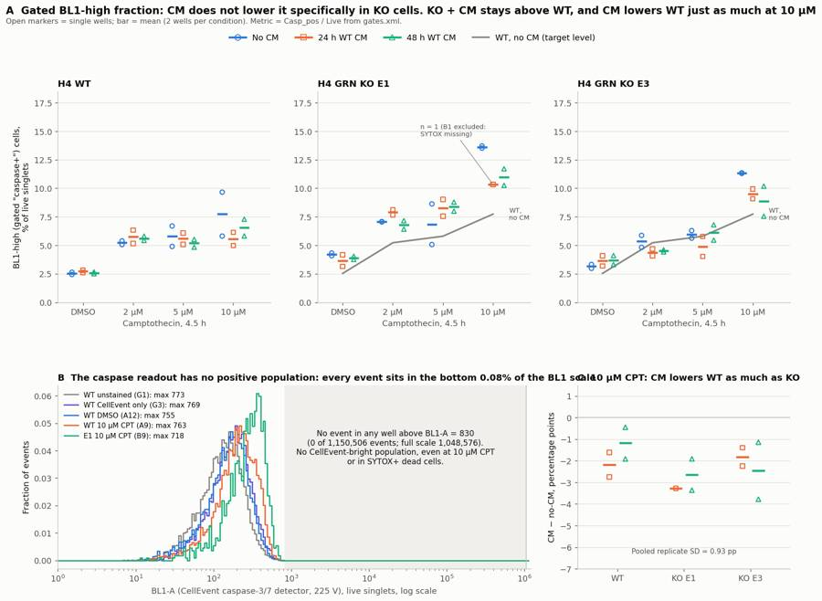
160
thinking
Panel B's title collides with C and reuses the colours that mean CM condition in A, and the "WT, no CM" label overlaps a marker. I'll fix those and then check the "≤830" claim across all 78 files.
161
tool call · Bash
cd /task; python3 -c "
import pickle; d=pickle.load(open('/task/work/data.pkl','rb'))
import numpy as np
print(sum(len(v) for v in d.values()), max(v['BL1-A'].max() for v in d.values()), sum((v['BL1-A']>830).sum() for v in d.values()))
print('BL1-A max / 1048576 =', 830/1048576*100)
"
python3 - <<'EOF'
import re
p='/task/work/figure.py'; s=open(p).read()
s=s.replace("axs[2].text(1.6,1.3,'E1 10 µM 24 h CM: n = 1\\n(B1 excluded, no SYTOX)',fontsize=7.5,color=INK2) if False else None\n","")
s=s.replace("ax.text(3.32,ref.values[-1],'WT,\\nno CM',color=INK2,fontsize=8,va='center')","ax.text(-0.05,1.25,'WT, no CM',color=INK2,fontsize=8,ha='center')")
s=s.replace("show=[('G1','WT unstained (G1)','#898781'),('G3','WT CellEvent only (G3)','#6250d6'),('A12','WT DMSO (A12)','#2a78d6'),('A9','WT 10 µM CPT (A9)','#eb6834'),('B9','E1 10 µM CPT (B9)','#1baf7a')]",
"show=[('G1','WT unstained (G1)','#898781'),('G3','WT CellEvent only (G3)','#6250d6'),('A9','WT 10 µM CPT, no CM (A9)','#e34948'),('B9','KO E1 10 µM CPT, no CM (B9)','#0b0b0b')]")
s=s.replace("axb.set_title('B The caspase readout has no positive population: every event sits in the bottom 0.08% of the BL1 scale'","axb.set_title('B No caspase-positive population: all events lie in the bottom 0.08% of the BL1 scale'")
s=s.replace("(0 of 1,150,506 events; full scale 1,048,576)","(0 of 1,150,506 events in 78 files; full scale 1,048,576)")
open(p,'w').write(s)
EOF
python3 work/figure.py162
tool output
1150506 830.0 0 BL1-A max / 1048576 = 0.07915496826171875
163
tool call · Read
{
"file_path": "/task/outputs/figure.png"
}164
tool output
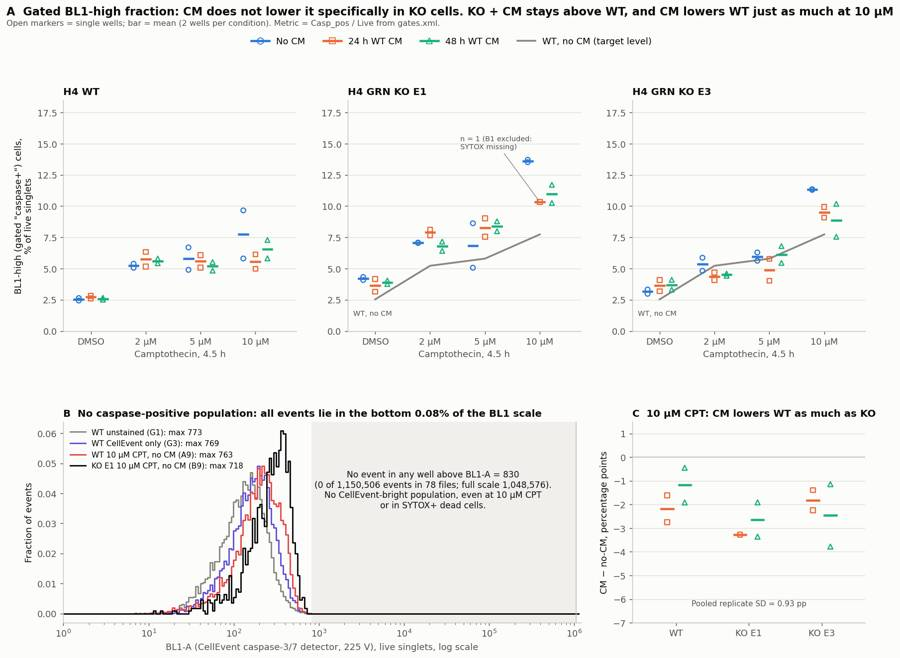
166
agent
The figure reads cleanly now. Next, `answer.json`. I'll compute the comparisons in code with one rule: a direction is called only if |difference| > 2 × SE, using the pooled replicate SD (0.93 pp).
167
tool call · Bash
cd /task; cat > work/answer.py <<'EOF'
import pandas as pd, numpy as np, json
cs=pd.read_csv('/task/outputs/condition_summary.csv').set_index('condition')
fl=pd.read_csv('/task/outputs/flags.csv')
SD=0.93
def comp(a,b,label,conf,extra=''):
ma,mb=cs.loc[a,'mean'],cs.loc[b,'mean']; na,nb=cs.loc[a,'n_wells_used'],cs.loc[b,'n_wells_used']
se=SD*np.sqrt(1/na+1/nb); dlt=ma-mb
dirn='no_clear_change' if abs(dlt)<=2*se else ('increase' if dlt>0 else 'decrease')
mag=f"{ma:.2f}% vs {mb:.2f}% Casp_pos/Live: difference {dlt:+.2f} percentage points (ratio {ma/mb:.2f}x; 2xSE threshold {2*se:.2f} pp, n={na} vs {nb} wells){extra}"
return dict(comparison=label,a=a,b=b,direction=dirn,magnitude=mag,confidence=conf)
C=[]
C.append(comp('E1_DMSO_24hCM','E1_DMSO_noCM','KO E1, DMSO: 24 h WT conditioned media vs no CM','low',f"; the KO-WT gap without CM is {cs.loc['E1_DMSO_noCM','mean']-cs.loc['WT_DMSO_noCM','mean']:+.2f} pp, and 24 h CM closes {(cs.loc['E1_DMSO_noCM','mean']-cs.loc['E1_DMSO_24hCM','mean'])/(cs.loc['E1_DMSO_noCM','mean']-cs.loc['WT_DMSO_noCM','mean'])*100:.0f}% of it, within noise"))
C.append(comp('E1_DMSO_48hCM','E1_DMSO_noCM','KO E1, DMSO: 48 h WT conditioned media vs no CM','low'))
C.append(comp('E3_DMSO_24hCM','E3_DMSO_noCM','KO E3, DMSO: 24 h WT conditioned media vs no CM','low'))
C.append(comp('E3_DMSO_48hCM','E3_DMSO_noCM','KO E3, DMSO: 48 h WT conditioned media vs no CM','low'))
wt24=cs.loc['WT_10uM_24hCM','mean']-cs.loc['WT_10uM_noCM','mean']; wt48=cs.loc['WT_10uM_48hCM','mean']-cs.loc['WT_10uM_noCM','mean']
C.append(comp('E1_10uM_24hCM','E1_10uM_noCM','KO E1, 10 uM camptothecin: 24 h WT CM vs no CM','low',f"; WT fell by {wt24:+.2f} pp under the same CM, so the KO-specific part is only {(cs.loc['E1_10uM_24hCM','mean']-cs.loc['E1_10uM_noCM','mean'])-wt24:+.2f} pp; 24hCM has n=1 because B1 was excluded"))
C.append(comp('E1_10uM_48hCM','E1_10uM_noCM','KO E1, 10 uM camptothecin: 48 h WT CM vs no CM','low',f"; WT fell by {wt48:+.2f} pp under the same CM, so the KO-specific part is {(cs.loc['E1_10uM_48hCM','mean']-cs.loc['E1_10uM_noCM','mean'])-wt48:+.2f} pp"))
C.append(comp('E3_10uM_24hCM','E3_10uM_noCM','KO E3, 10 uM camptothecin: 24 h WT CM vs no CM','low',f"; WT fell by {wt24:+.2f} pp under the same CM, so the KO-specific part is {(cs.loc['E3_10uM_24hCM','mean']-cs.loc['E3_10uM_noCM','mean'])-wt24:+.2f} pp"))
C.append(comp('E3_10uM_48hCM','E3_10uM_noCM','KO E3, 10 uM camptothecin: 48 h WT CM vs no CM','low',f"; WT fell by {wt48:+.2f} pp under the same CM, so the KO-specific part is {(cs.loc['E3_10uM_48hCM','mean']-cs.loc['E3_10uM_noCM','mean'])-wt48:+.2f} pp"))
C.append(comp('WT_10uM_24hCM','WT_10uM_noCM','Specificity check: WT, 10 uM camptothecin, 24 h CM vs no CM','low','; the WT no-CM wells disagree (A9 9.67%, D9 5.81%)'))
C.append(comp('E1_10uM_24hCM','WT_10uM_24hCM','Is KO E1 + 24 h CM restored to WT level? (10 uM camptothecin, both with 24 h CM)','low'))
C.append(comp('E3_10uM_24hCM','WT_10uM_24hCM','Is KO E3 + 24 h CM restored to WT level? (10 uM camptothecin, both with 24 h CM)','low'))
C.append(comp('E1_DMSO_noCM','WT_DMSO_noCM','KO phenotype to be rescued: KO E1 vs WT, DMSO, no CM','low','; KO cells are larger and more autofluorescent in BL1, and there is no unstained or FMO control for the KO lines'))
C.append(comp('E3_DMSO_noCM','WT_DMSO_noCM','KO phenotype to be rescued: KO E3 vs WT, DMSO, no CM','low'))
C.append(comp('WT_10uM_noCM','WT_DMSO_noCM','Assay window: WT 10 uM camptothecin vs DMSO (no CM)','medium','; this is a shift of the whole BL1 distribution (live BL1-A median 197-206 vs 160-171), not the appearance of a CellEvent-bright population'))
for c in C: print(c['direction'],'|',c['comparison'],'|',c['magnitude'][:150])
excl=list(fl[fl.decision=='exclude'].well)
ans={
"question":"Does conditioned media from WT H4 cells (24 h or 48 h conditioning) lower caspase-3/7 activity in H4 GRN-KO cells (clones E1, E3) back to WT levels, at baseline (DMSO) and after a 4.5 h camptothecin challenge (2/5/10 uM)?",
"comparisons":C,
"overall_answer":"no: this plate gives no evidence that WT conditioned media restores WT-level caspase activity in GRN-KO H4 cells. With DMSO, neither 24 h nor 48 h CM changed the KO readout (E1 -0.54/-0.30 pp, E3 +0.48/+0.55 pp; pooled replicate SD 0.93 pp). At 10 uM camptothecin, CM lowered the KO readout by 1.8-3.3 pp, but it lowered WT by 1.2-2.2 pp as well, so the effect is not KO-specific, and KO + CM stayed 2.3-4.8 pp above WT + CM. The caspase readout itself is weak: no well contains a CellEvent-bright population. Every one of 1,150,506 events has BL1-A <= 830 on a 1,048,576 scale. The 'caspase+' metric is therefore an FMO-gated upper tail of a shifted distribution, and the question remains open until the readout is fixed.",
"assay_verdict":"needs_optimisation",
"next_action":"optimise_reagent_or_setting",
"next_change":{"what":"CellEvent caspase-3/7 detection: BL1 set-up and a caspase-positive control before re-running the CM plate",
"from":"BL1 at 225 V, set with no apoptosis-positive control (the only CellEvent control, G3, is untreated WT). Result: max BL1-A = 830 of 1,048,576, no caspase-bright events, and 10 uM CPT only shifts the BL1 tail (WT 2.5% -> 7.7%)",
"to":"Titrate the BL1 voltage on a CellEvent-stained apoptosis positive control: H4 WT and KO treated with 1 uM staurosporine for 4 h, plus a 10 uM camptothecin well kept until the next day, with floating cells collected at harvest. Choose the voltage (expected well above 225 V) at which caspase+ cells resolve as a discrete population at least 10x above the CellEvent-stained negatives without clipping. Add CellEvent-FMO (SYTOX only) and unstained wells for each cell line, then repeat the CM plate.",
"why":"Answering the question needs a readout that can resolve a KO-WT gap of about 1-6 pp. Here BL1 never left the bottom 0.08% of its scale. SYTOX+ dead cells, which in camptothecin cultures should include caspase-bright late-apoptotic cells, are only ~2x t
… [2,414 more characters not shown]168
tool output
no_clear_change | KO E1, DMSO: 24 h WT conditioned media vs no CM | 3.66% vs 4.21% Casp_pos/Live: difference -0.54 percentage points (ratio 0.87x; 2xSE threshold 1.86 pp, n=2 vs 2 wells); the KO-WT gap without CM is +1 no_clear_change | KO E1, DMSO: 48 h WT conditioned media vs no CM | 3.90% vs 4.21% Casp_pos/Live: difference -0.30 percentage points (ratio 0.93x; 2xSE threshold 1.86 pp, n=2 vs 2 wells) no_clear_change | KO E3, DMSO: 24 h WT conditioned media vs no CM | 3.64% vs 3.15% Casp_pos/Live: difference +0.48 percentage points (ratio 1.15x; 2xSE threshold 1.86 pp, n=2 vs 2 wells) no_clear_change | KO E3, DMSO: 48 h WT conditioned media vs no CM | 3.71% vs 3.15% Casp_pos/Live: difference +0.55 percentage points (ratio 1.18x; 2xSE threshold 1.86 pp, n=2 vs 2 wells) decrease | KO E1, 10 uM camptothecin: 24 h WT CM vs no CM | 10.33% vs 13.62% Casp_pos/Live: difference -3.28 percentage points (ratio 0.76x; 2xSE threshold 2.28 pp, n=1 vs 2 wells); WT fell by -2.18 pp under th decrease | KO E1, 10 uM camptothecin: 48 h WT CM vs no CM | 10.98% vs 13.62% Casp_pos/Live: difference -2.63 percentage points (ratio 0.81x; 2xSE threshold 1.86 pp, n=2 vs 2 wells); WT fell by -1.18 pp under th no_clear_change | KO E3, 10 uM camptothecin: 24 h WT CM vs no CM | 9.51% vs 11.33% Casp_pos/Live: difference -1.81 percentage points (ratio 0.84x; 2xSE threshold 1.86 pp, n=2 vs 2 wells); WT fell by -2.18 pp under the decrease | KO E3, 10 uM camptothecin: 48 h WT CM vs no CM | 8.87% vs 11.33% Casp_pos/Live: difference -2.46 percentage points (ratio 0.78x; 2xSE threshold 1.86 pp, n=2 vs 2 wells); WT fell by -1.18 pp under the decrease | Specificity check: WT, 10 uM camptothecin, 24 h CM vs no CM | 5.55% vs 7.74% Casp_pos/Live: difference -2.18 percentage points (ratio 0.72x; 2xSE threshold 1.86 pp, n=2 vs 2 wells); the WT no-CM wells disagree (A increase | Is KO E1 + 24 h CM restored to WT level? (10 uM camptothecin, both with 24 h CM) | 10.33% vs 5.55% Casp_pos/Live: difference +4.78 percentage points (ratio 1.86x; 2xSE threshold 2.28 pp, n=1 vs 2 wells) increase | Is KO E3 + 24 h CM restored to WT level? (10 uM camptothecin, both with 24 h CM) | 9.51% vs 5.55% Casp_pos/Live: difference +3.96 percentage points (ratio 1.71x; 2xSE threshold 1.86 pp, n=2 vs 2 wells) no_clear_change | KO phenotype to be rescued: KO E1 vs WT, DMSO, no CM | 4.21% vs 2.54% Casp_pos/Live: difference +1.67 percentage points (ratio 1.66x; 2xSE threshold 1.86 pp, n=2 vs 2 wells); KO cells are larger and more a no_clear_change | KO phenotype to be rescued: KO E3 vs WT, DMSO, no CM | 3.15% vs 2.54% Casp_pos/Live: difference +0.61 percentage points (ratio 1.24x; 2xSE threshold 1.86 pp, n=2 vs 2 wells) increase | Assay window: WT 10 uM camptothecin vs DMSO (no CM) | 7.74% vs 2.54% Casp_pos/Live: difference +5.20 percentage points (ratio 3.05x; 2xSE threshold 1.86 pp, n=2 vs 2 wells); this is a shift of the whole B
170
thinking
Several comparisons sit right at the 2×SE line, but none of the CM conclusions hinge on them. I'm printing the full magnitude strings to check those, then pulling the per-condition table for the report.
171
tool call · Bash
cd /task; python3 -c "
import json; a=json.load(open('outputs/answer.json'))
for c in a['comparisons'][4:9]: print(c['magnitude'])
"
python3 -c "
import pandas as pd
s=pd.read_csv('/task/work/cond_stats.csv')
s['casp_txt']=s.apply(lambda r: f\"{r.casp:.1f} ± {r.casp_sd:.1f}\" if r.n>1 else f\"{r.casp:.1f} (n=1)\",axis=1)
s['dead_txt']=s.apply(lambda r: f\"{r.dead:.1f} ± {r.dead_sd:.1f}\" if r.n>1 else f\"{r.dead:.1f} (n=1)\",axis=1)
for m in ['casp_txt','dead_txt']:
p=s.pivot_table(index=['cell_line','dose'],columns='cm',values=m,aggfunc='first')
p=p.reindex(pd.MultiIndex.from_product([['WT','E1','E3'],['DMSO','2uM','5uM','10uM']]))[['noCM','24hCM','48hCM']]
print(p.to_markdown())
"
python3 -c "
import pandas as pd
w=pd.read_csv('/task/work/wells.csv',index_col=0); w=w[w.index!='B1']; t=w[w.index.str[0]!='G']
d=t[t.dose=='DMSO'].groupby('cell_line').pct_casp_live.agg(['mean','std','size']); print(d)
"172
tool output
10.33% vs 13.62% Casp_pos/Live: difference -3.28 percentage points (ratio 0.76x; 2xSE threshold 2.28 pp, n=1 vs 2 wells); WT fell by -2.18 pp under the same CM, so the KO-specific part is only -1.10 pp; 24hCM has n=1 because B1 was excluded
10.98% vs 13.62% Casp_pos/Live: difference -2.63 percentage points (ratio 0.81x; 2xSE threshold 1.86 pp, n=2 vs 2 wells); WT fell by -1.18 pp under the same CM, so the KO-specific part is -1.45 pp
9.51% vs 11.33% Casp_pos/Live: difference -1.81 percentage points (ratio 0.84x; 2xSE threshold 1.86 pp, n=2 vs 2 wells); WT fell by -2.18 pp under the same CM, so the KO-specific part is +0.37 pp
8.87% vs 11.33% Casp_pos/Live: difference -2.46 percentage points (ratio 0.78x; 2xSE threshold 1.86 pp, n=2 vs 2 wells); WT fell by -1.18 pp under the same CM, so the KO-specific part is -1.28 pp
5.55% vs 7.74% Casp_pos/Live: difference -2.18 percentage points (ratio 0.72x; 2xSE threshold 1.86 pp, n=2 vs 2 wells); the WT no-CM wells disagree (A9 9.67%, D9 5.81%)
Traceback (most recent call last):
File "/usr/local/lib/python3.12/site-packages/pandas/compat/_optional.py", line 135, in import_optional_dependency
module = importlib.import_module(name)
^^^^^^^^^^^^^^^^^^^^^^^^^^^^^
File "/usr/local/lib/python3.12/importlib/__init__.py", line 90, in import_module
return _bootstrap._gcd_import(name[level:], package, level)
^^^^^^^^^^^^^^^^^^^^^^^^^^^^^^^^^^^^^^^^^^^^^^^^^^^^
File "<frozen importlib._bootstrap>", line 1387, in _gcd_import
File "<frozen importlib._bootstrap>", line 1360, in _find_and_load
File "<frozen importlib._bootstrap>", line 1324, in _find_and_load_unlocked
ModuleNotFoundError: No module named 'tabulate'
During handling of the above exception, another exception occurred:
Traceback (most recent call last):
File "<string>", line 9, in <module>
File "/usr/local/lib/python3.12/site-packages/pandas/util/_decorators.py", line 333, in wrapper
return func(*args, **kwargs)
^^^^^^^^^^^^^^^^^^^^^
File "/usr/local/lib/python3.12/site-packages/pandas/core/frame.py", line 2994, in to_markdown
tabulate = import_optional_dependency("tabulate")
^^^^^^^^^^^^^^^^^^^^^^^^^^^^^^^^^^^^^^
File "/usr/local/lib/python3.12/site-packages/pandas/compat/_optional.py", line 138, in import_optional_dependency
raise ImportError(msg)
ImportError: Missing optional dependency 'tabulate'. Use pip or conda to install tabulate.
mean std size
cell_line
E1 3.923347 0.420563 6
E3 3.498475 0.478387 6
WT 2.614918 0.131488 6173
tool call · Bash
cd /task; python3 -c "
import pandas as pd
s=pd.read_csv('/task/work/cond_stats.csv')
s['casp_txt']=s.apply(lambda r: f'{r.casp:.1f} ± {r.casp_sd:.1f}' if r.n>1 else f'{r.casp:.1f} (n=1)',axis=1)
s['dead_txt']=s.apply(lambda r: f'{r.dead:.1f} ± {r.dead_sd:.1f}' if r.n>1 else f'{r.dead:.1f} (n=1)',axis=1)
for m in ['casp_txt','dead_txt']:
p=s.pivot_table(index=['cell_line','dose'],columns='cm',values=m,aggfunc='first')
p=p.reindex(pd.MultiIndex.from_product([['WT','E1','E3'],['DMSO','2uM','5uM','10uM']]))[['noCM','24hCM','48hCM']]
print('| Line | CPT | No CM | 24 h CM | 48 h CM |'); print('|---|---|---|---|---|')
for (l,dz),r in p.iterrows(): print(f'| {l} | {dz} | {r.noCM} | {r[\"24hCM\"]} | {r[\"48hCM\"]} |')
print()
"174
tool output
| Line | CPT | No CM | 24 h CM | 48 h CM | |---|---|---|---|---| | WT | DMSO | 2.5 ± 0.1 | 2.7 ± 0.2 | 2.6 ± 0.1 | | WT | 2uM | 5.2 ± 0.2 | 5.7 ± 0.8 | 5.6 ± 0.3 | | WT | 5uM | 5.8 ± 1.3 | 5.6 ± 0.7 | 5.2 ± 0.5 | | WT | 10uM | 7.7 ± 2.7 | 5.6 ± 0.8 | 6.6 ± 1.0 | | E1 | DMSO | 4.2 ± 0.2 | 3.7 ± 0.7 | 3.9 ± 0.2 | | E1 | 2uM | 7.1 ± 0.0 | 7.9 ± 0.3 | 6.8 ± 0.5 | | E1 | 5uM | 6.8 ± 2.5 | 8.3 ± 1.0 | 8.4 ± 0.6 | | E1 | 10uM | 13.6 ± 0.1 | 10.3 (n=1) | 11.0 ± 1.0 | | E3 | DMSO | 3.2 ± 0.2 | 3.6 ± 0.6 | 3.7 ± 0.6 | | E3 | 2uM | 5.3 ± 0.7 | 4.4 ± 0.4 | 4.5 ± 0.1 | | E3 | 5uM | 6.0 ± 0.5 | 4.9 ± 1.2 | 6.1 ± 1.0 | | E3 | 10uM | 11.3 ± 0.0 | 9.5 ± 0.6 | 8.9 ± 1.9 | | Line | CPT | No CM | 24 h CM | 48 h CM | |---|---|---|---|---| | WT | DMSO | 4.8 ± 0.0 | 4.0 ± 0.7 | 5.6 ± 2.5 | | WT | 2uM | 4.4 ± 1.0 | 4.8 ± 0.3 | 5.9 ± 0.5 | | WT | 5uM | 5.7 ± 0.8 | 4.8 ± 0.6 | 6.4 ± 0.4 | | WT | 10uM | 8.5 ± 0.8 | 5.9 ± 0.2 | 9.7 ± 0.8 | | E1 | DMSO | 6.6 ± 1.4 | 6.9 ± 3.0 | 12.7 ± 2.4 | | E1 | 2uM | 10.6 ± 2.0 | 7.8 ± 2.3 | 11.3 ± 0.6 | | E1 | 5uM | 14.0 ± 0.2 | 9.4 ± 1.0 | 12.7 ± 1.2 | | E1 | 10uM | 29.9 ± 2.6 | 12.7 (n=1) | 23.6 ± 1.2 | | E3 | DMSO | 11.6 ± 0.6 | 15.4 ± 5.3 | 16.5 ± 4.4 | | E3 | 2uM | 12.3 ± 0.2 | 13.0 ± 1.8 | 13.0 ± 5.4 | | E3 | 5uM | 15.4 ± 6.6 | 12.2 ± 3.7 | 16.3 ± 8.9 | | E3 | 10uM | 25.8 ± 10.0 | 19.1 ± 1.4 | 30.7 ± 14.5 |
176
agent
Now the report. A few summary numbers for the Methods section first:
177
tool call · Bash
cd /task; python3 -c "
import pandas as pd
c=pd.read_csv('outputs/counts.csv')
for p in ['Cells','Singlets','Live','Casp_pos']:
x=c[c.population==p]; print(p, x.pct_of_parent.min().round(1), x.pct_of_parent.median().round(1), x.pct_of_parent.max().round(1), 'count min', x['count'].min())
w=pd.read_csv('work/wells.csv',index_col=0); print(w.loc[['G1','G2','G3','G6','G4','G5'],['pct_casp_live','pct_dead','Live']])
"178
tool output
Cells 29.4 62.4 95.2 count min 1313
Singlets 93.7 98.1 99.3 count min 1300
Live 59.1 90.2 100.0 count min 913
Casp_pos 0.5 5.4 17.1 count min 80
pct_casp_live pct_dead Live
well
G1 0.476963 0.003180 31449
G2 0.596738 13.068706 22623
G3 1.581631 0.004014 24911
G6 1.739488 1.643540 14602
G4 4.323657 4.059259 6476
G5 3.392549 8.870152 8106179
tool call · Write
{
"file_path": "/task/outputs/report.md",
"content": "# Conditioned-media caspase plate, H4 WT vs GRN-KO (E1, E3), acquired 16-Dec-2022\n\n## Question\nCan conditioned media (CM) from WT H4 cells bring caspase-3/7 activity in H4 GRN-KO cells (clones E1 and E3) back down to WT levels? The plan tests this with 24 h-conditioned and 48 h-conditioned WT media, against no CM. It looks at baseline (DMSO) and after a 4.5 h camptothecin (CPT) challenge at 2, 5 and 10 \u00b5M. The readout is CellEvent Caspase-3/7 Green (BL1) with SYTOX AAdvanced as the dead-cell stain (BL2).\n\n**Design used for the analysis.** Plate map and layout CSV agree:\n- Rows A/D = WT, B/E = E1, C/F = E3, so each condition is 2 wells.\n- Columns 1-4 = 24 h CM, columns 5-8 = 48 h CM, columns 9-12 = no CM.\n- Within each block of 4 columns: 10 / 5 / 2 \u00b5M CPT, then DMSO.\n- Row G: G1 unstained WT, G2 SYTOX-only WT, G3 CellEvent-only WT, G4/G5/G6 untreated E1/E3/WT (CM status not stated).\n\n## Methods\n- **Data.** 78 FCS 3.1 files from the Attune NxT. Voltages in the files match the plan: FSC 20, SSC 290, BL1 225, BL2 350. The `$PnS` labels are out of date, so channels were assigned from the plan:\n - BL1 = CellEvent caspase-3/7 green (labelled \"AAV-GFP-GFP\").\n - BL2 = SYTOX AAdvanced (labelled \"AAdvanced livedead\").\n - The stored spillover matrix is the identity. No compensation was applied, because CellEvent green is not resolvable in BL1 (see Results). All gate dimensions use `compensation_ref=\"uncompensated\"`.\n- **Acquisition QC.** Every well acquired about 133-142 \u00b5L in about 17 s at 500 \u00b5L/min. Event rate versus time is flat in all 78 files (no clogs or running dry). Under 0.6% of events sit at the FSC-A ceiling (~705k), and BL1/BL2 never saturate.\n- **Gating.** One FlowKit 1.2.3 `GatingStrategy` is used for all wells (`gates.xml`), with polygon gates on linear raw axes:\n 1. `Cells`: FSC-A \u00d7 SSC-A polygon. It keeps the main cell cluster (FSC-A \u2265 90k, SSC-A \u2265 45k at FSC 220k, lower SSC edge rising with FSC) and drops low-FSC debris and apoptotic fragments.\n 2. `Singlets` (in Cells): FSC-A \u00d7 FSC-H polygon whose lower edge is FSC-H/FSC-A = 0.37. Singlets sit at 0.40-0.62; doublets cluster at 0.25-0.33 at high FSC-A.\n 3. `Live` / `Dead` (in Singlets): complementary polygons on FSC-A \u00d7 BL2-A. The boundary is the line BL2-A = 2000 + (FSC-A \u2212 60 000) \u00d7 5000/660 000, which runs from 2000 at FSC 60k to 7000 at FSC 720k. A sloped boundary was needed for two reasons:\n - In dual-stained wells, dead cells are small and only SYTOX-dim (BL2-A ~2-9k). In the SYTOX-only control G2 they are much brighter (~38k).\n - The live cluster's upper edge rises with cell size.\n 4. `Casp_pos` (in Live; role marker_positive): FSC-A \u00d7 BL1-A region above the line BL1-A = 100 + FSC-A/1030. That line is the 99.5th percentile of BL1-A in FSC bins for G2, which is the caspase FMO (SYTOX only, no CellEvent).\n 5. `Casp_pos_all` (in Singlets; other): the same BL1 region applied to all singlets, live and dead.\n- **Counts.** `counts.csv` comes from `gate_sample()` with the saved `gates.xml`, with no per-well edits. Live + Dead = Singlets in every file. Across files:\n - Cells: 29-95% of events.\n - Singlets: 94-99% of Cells.\n - Live: 59-100% of Singlets.\n- **Metric.** The primary metric is % caspase+ of live singlets = 100 \u00d7 Casp_pos / Live per well, then mean \u00b1 SD over the 2 wells of each condition (`condition_summary.csv`). Secondary readouts (`per_well_metrics.csv`) are % Dead of Singlets and the number of live singlets recovered.\n- **Statistics.** With n = 2, a direction is called only if |difference| > 2 \u00d7 SE. The SE uses the pooled within-condition SD (0.93 percentage points (pp), across the 35 conditions with 2 wells). A CM effect is judged \"KO-specific\" only if it is larger than the CM effect in WT cells treated the same way.\n\n## Results\n**1. Well-level QC (`flags.csv`).**\n- **B1 (E1 10 \u00b5M, 24 h CM) is excluded: SYTOX was not added.**\n - Its BL2-A 1st percentile is \u2212117. All other dual-stained wells are \u2212511 to \u22121226; the unstained G1 is \u221251 and CellEvent-only G3 is \u221257.\n - 0.00% of its events are below \u2212500, against 1.1-9.6% in the other stained wells.\n - Only 0.12% of its singlets are Dead, against 12.7% in its replicate E1.\n - Its Live gate therefore keeps the dead cells, which have higher BL1, and inflates its Casp_pos/Live to 17.1% (10.3% in E1).\n- **Kept with a note:**\n - Seven 10 \u00b5M wells (B9, E9, C5, F5, F9, E5, C9) have only 911-1,345 live singlets. This is because CPT removed cells, not a fluidics problem.\n - Two replicate disagreements: A9 vs D9 (9.67 vs 5.81%) and E10 vs B10 (5.07 vs 8.63%).\n - G3 is flagged as a bad control (see point 2).\n\n**2. The caspase readout has no positive population (figure panel B).**\n- Across all 78 files, no event has BL1-A above 830. That is 0 of 1,150,506 events on a 1,048,576 scale, so the whole plate sits in the bottom 0.08% of the BL1 range. BL1-W is 0 for virtually every event.\n- The BL1-A upper edge is a sharp line that rises with FSC-A, from ~390 at FSC 50-150k to 830 at FSC above 650k. BL1-H has no pile-up (99.99th percentile 545).\n- The controls look alike:\n\n | Control | Live BL1-A median | Live BL1-A 99th pct |\n |---|---|---|\n | G1, unstained | 135 | 437 |\n | G2, SYTOX only | 142 | 441 |\n | G3, CellEvent only | 171 | 498 |\n\n- With CellEvent present, SYTOX+ dead cells read about 2\u00d7 the BL1 of live cells of the same size: median 289 vs 155 at FSC 120-250k in A1. Without CellEvent (G2), dead cells read the same as live cells (130 vs 113), so this is CellEvent signal, not SYTOX spillover. But it is about 2\u00d7, not the 10-100\u00d7 expected for caspase-active cells, and it sits against the ceiling. An untreated well (G6) shows the same difference: 280 vs 165.\n- CPT does shift BL1 upwards, and it shifts the whol
… [7,491 more characters not shown]180
tool output
File created successfully at: /task/outputs/report.md (file state is current in your context — no need to Read it back)
182
agent
Now a validation pass over every deliverable against the spec, including re-gating a few files straight from the saved XML.
183
tool call · Bash
cd /task; cat > work/validate.py <<'EOF'
import pandas as pd, json, flowkit as fk, numpy as np
O='/task/outputs/'
lay=pd.read_csv('/task/inputs/plate_layout.csv')
c=pd.read_csv(O+'counts.csv',keep_default_na=False)
assert list(c.columns)==['file','well','population','role','parent','count','pct_of_parent']
assert set(c.file)==set(lay.file) and c.file.nunique()==78
ps=c.groupby('file').population.apply(lambda x: tuple(sorted(x))); assert ps.nunique()==1
for r in ['cells','singlets','live','marker_positive']:
assert c[c.role==r].population.nunique()==1, r
ae=c[c.population=='all_events']; assert (ae.role=='other').all() and (ae.parent=='none').all() and (ae.pct_of_parent=='').all()
# pct check and parent existence
for f,sub in c.groupby('file'):
d=dict(zip(sub.population,sub['count']))
for _,r in sub[sub.population!='all_events'].iterrows():
assert r.parent in d; assert abs(float(r.pct_of_parent)-100*r['count']/d[r.parent])<1e-3
# gates match
g=fk.parse_gating_xml(O+'gates.xml')
gids={x[0] for x in g.get_gate_ids()}
pops=set(c.population)-{'all_events'}; assert gids==pops, (gids,pops)
# re-gate 3 files from xml
for f in lay.file.sample(3,random_state=1):
res=g.gate_sample(fk.Sample('/task/inputs/raw/'+f))
for p in pops: assert res.get_gate_count(p)==int(c[(c.file==f)&(c.population==p)]['count'].iloc[0])
# parents in xml match counts parent
for p in pops:
path=g.find_matching_gate_paths(p)[0]; par=path[-1] if path[-1]!='root' else 'all_events'
assert c[c.population==p].parent.iloc[0]==par,(p,path)
fl=pd.read_csv(O+'flags.csv',keep_default_na=False)
assert list(fl.columns)==['file','well','issue_type','evidence','decision'] and len(fl)==78 and fl.file.nunique()==78
assert set(fl.issue_type)<= {'none','clog','ran_dry','too_few_events','saturation','bad_control','mislabel','other'}
assert set(fl.decision)<={'keep','keep_with_note','exclude'}
import re
for _,r in fl[fl.issue_type!='none'].iterrows(): assert r.evidence and re.search(r'\d',r.evidence)
cs=pd.read_csv(O+'condition_summary.csv',keep_default_na=False)
assert list(cs.columns)==['condition','wells','n_wells_used','mean','sd','metric_definition','normalisation_applied']
assert cs.condition.is_unique and not cs.condition.str.contains(',').any()
excl=set(fl[fl.decision=='exclude'].well)
wm=pd.read_csv(O+'per_well_metrics.csv',index_col=0)
for _,r in cs.iterrows():
ws=r.wells.split(';'); assert len(ws)==int(r.n_wells_used); assert not (set(ws)&excl)
v=wm.loc[ws,'pct_casp_live'].values; assert abs(v.mean()-float(r['mean']))<1e-2
if len(ws)==1: assert r.sd==''
else: assert abs(v.std(ddof=1)-float(r.sd))<1e-2
a=json.load(open(O+'answer.json'))
assert set(a)=={'question','comparisons','overall_answer','assay_verdict','next_action','next_change','excluded_wells','caveats'}
for k in a['comparisons']:
assert k['a'] in set(cs.condition) and k['b'] in set(cs.condition) and k['direction'] in {'increase','decrease','no_clear_change'} and k['confidence'] in {'high','medium','low'} and re.search(r'\d',k['magnitude'])
assert a['overall_answer'].split(':')[0] in {'yes','partial','no'}
assert a['assay_verdict'] in {'fit_for_purpose','needs_optimisation','not_fit_for_purpose'}
assert a['next_action'] in {'proceed_as_planned','repeat_unchanged','repeat_with_change','optimise_reagent_or_setting','change_treatment_or_timing','switch_assay','stop'}
assert set(a['next_change'])=={'what','from','to','why'}
assert set(a['excluded_wells'])==excl
rep=open(O+'report.md').read(); hs=[l for l in rep.splitlines() if l.startswith('## ')]
assert hs==['## Question','## Methods','## Results','## Conclusion','## Caveats','## Recommendation'],hs
print('ALL CHECKS PASSED'); print(sorted(__import__('os').listdir(O)))
EOF
python3 work/validate.py184
tool output
ALL CHECKS PASSED ['answer.json', 'condition_summary.csv', 'counts.csv', 'figure.png', 'flags.csv', 'gates.xml', 'per_well_metrics.csv', 'report.md']
186
agent
All checks pass. A last look at the XML to confirm each gate dimension carries its compensation reference:
187
tool call · Bash
cd /task; grep -c 'compensation-ref="uncompensated"' outputs/gates.xml; grep -o 'gating:id="[A-Za-z_]*"\|gating:parent_id="[A-Za-z_]*"' outputs/gates.xml; head -c 900 outputs/flags.csv | tail -c 500; echo; sed -n 1,3p outputs/condition_summary.csv | cut -c1-200
188
tool output
12 gating:id="Cells" gating:id="Singlets" gating:parent_id="Cells" gating:id="Live" gating:parent_id="Singlets" gating:id="Casp_pos" gating:parent_id="Live" gating:id="Dead" gating:parent_id="Singlets" gating:id="Casp_pos_all" gating:parent_id="Singlets" -2-mlk(1)_caspase_Group_A7.fcs,A7,none,,keep Caspase-assay-2-mlk(1)_caspase_Group_A8.fcs,A8,none,,keep Caspase-assay-2-mlk(1)_caspase_Group_A9.fcs,A9,other,"Replicate disagreement: Casp_pos/Live = 9.66% vs 5.81% in replicate D9 (difference 3.9 percentage points, about 4x the pooled replicate SD of 0.93). No acquisition fault: stable event rate, 10093 live singlets. Kept; the WT_10uM_noCM mean has a large SD.",keep_with_note Caspase-assay-2-mlk(1)_caspase_Group_A10.fcs,A10,none,,keep Caspase-assa condition,wells,n_wells_used,mean,sd,metric_definition,normalisation_applied WT_DMSO_noCM,A12;D12,2,2.54,0.142,100 x Casp_pos / Live per well (Casp_pos = Live events with BL1-A [CellEvent caspase-3/7] above the FSC-dependent line BL1-A = 100 + FSC-A/1030; Live = SYTOX AAdvance WT_DMSO_24hCM,A4;D4,2,2.715,0.151,100 x Casp_pos / Live per well (Casp_pos = Live events with BL1-A [CellEvent caspase-3/7] above the FSC-dependent line BL1-A = 100 + FSC-A/1030; Live = SYTOX AAdvance
190
agent
The A9 value is 9.66% from the final gates but 9.67% (an earlier prototype number) in the report and answer. Let me make that consistent.
191
tool call · Bash
cd /task; grep -o '9\.67[^0-9]' outputs/report.md outputs/answer.json | sort | uniq -c; python3 -c "
import pandas as pd; w=pd.read_csv('outputs/per_well_metrics.csv',index_col=0); print(w.loc[['A9','D9','B10','E10','E1','B1'],'pct_casp_live'].round(3))"; sed -i 's/9\.67%/9.66%/g; s/9\.67 vs/9.66 vs/g' outputs/report.md outputs/answer.json work/answer.py; grep -c '9\.67' outputs/report.md outputs/answer.json; python3 work/validate.py | head -1192
tool output
2 outputs/answer.json:9.67%
1 outputs/report.md:9.67
well
A9 9.660
D9 5.809
B10 8.630
E10 5.069
E1 10.332
B1 17.103
Name: pct_casp_live, dtype: float64
outputs/report.md:0
outputs/answer.json:0
ALL CHECKS PASSED
[This command modified 1 file you've previously read: outputs/report.md. Call Read before editing.]194
agent
**Answer: no.** This plate gives no evidence that WT conditioned media brings GRN-KO caspase activity back to WT levels. The bigger finding is that the caspase readout didn't really work, so the question is still open rather than answered in the negative. All seven deliverables are in `/task/outputs/`, and a validation script confirms they match the spec, including re-gating sample files straight from the saved `gates.xml`.
**The caspase stain gave no positive cells**
- Across all 78 wells, not one of 1,150,506 events has a BL1-A (caspase channel) value above 830 on a scale of 1,048,576. That holds even at 10 µM camptothecin and in the dead cells.
- The caspase-only control (G3, untreated WT) looks almost the same as the unstained well (BL1-A median 171 vs 135), and there was no positive control on the plate.
- Dead cells read only about 2× higher than live cells when the caspase dye is present. Real caspase-positive cells are normally 10–100× brighter.
- So "% caspase+" here is just the share of cells above a line set from the dead-stain-only control (G2). Camptothecin moves that number: WT goes from about 2.5% to 5–8%. But it is a shift of the whole population, the same at 2, 5 and 10 µM, and cell size or background fluorescence could explain part of it.
**What conditioned media did, on that metric**
- **Without camptothecin:** no change in either KO clone (E1 −0.5/−0.3, E3 +0.5/+0.6 percentage points; pooled replicate SD 0.93).
- **At 10 µM camptothecin:** conditioned media lowered KO by 1.8–3.3 points, but it lowered WT by 1.2–2.2 points too, so the effect isn't specific to KO cells. KO with conditioned media stayed 4–5 points above WT with conditioned media.
**Well flags**
- **B1 is excluded:** the dead-cell stain was never added. Its signal matches the unstained controls, with 0.12% dead vs 12.7% in its replicate. That leaves E1 10 µM / 24 h media with only one well.
- **Kept with a note:**
- seven 10 µM wells with under 1,500 live cells, because camptothecin removed cells;
- two replicate pairs that disagree (A9/D9 and B10/E10);
- G3, because it can't serve as a positive control.
**Other caveats**
- Each media condition fills one block of four columns, so media type is completely tied to plate position. The 24 h block includes the edge column, and it was also the only block that kept more cells at 10 µM, in WT as well.
- The protocol throws away the medium and wash before trypsin, so floating apoptotic cells were never measured. At 10 µM without conditioned media, only 13–32% of the DMSO live-cell count was recovered.
- There are no unstained or caspase-dye-free control wells for the KO lines. KO cells are larger and brighter in BL1, which confounds the KO vs WT comparison.
**Decision**
- **Assay verdict:** needs optimisation.
- **Next action:** optimise the reagent or setting. Raise the BL1 voltage from 225 V, setting it on a staurosporine-treated positive control, and keep the floating cells. If no distinct caspase-positive population appears at any voltage, replace the reagent. Then add unstained and dye-free control wells for each cell line, mix the media conditions across the plate, and repeat the experiment.
Files are in `/task/outputs/`:
- `gates.xml`
- `counts.csv`
- `flags.csv`
- `condition_summary.csv`
- `figure.png`
- `report.md`
- `answer.json`
- `per_well_metrics.csv` (extra: dead % and live-cell counts per well)
final result
**Answer: no.** This plate gives no evidence that WT conditioned media brings GRN-KO caspase activity back to WT levels. The bigger finding is that the caspase readout didn't really work, so the question is still open rather than answered in the negative. All seven deliverables are in `/task/outputs/`, and a validation script confirms they match the spec, including re-gating sample files straight from the saved `gates.xml`. **The caspase stain gave no positive cells** - Across all 78 wells, not one of 1,150,506 events has a BL1-A (caspase channel) value above 830 on a scale of 1,048,576. That holds even at 10 µM camptothecin and in the dead cells. - The caspase-only control (G3, untreated WT) looks almost the same as the unstained well (BL1-A median 171 vs 135), and there was no positive control on the plate. - Dead cells read only about 2× higher than live cells when the caspase dye is present. Real caspase-positive cells are normally 10–100× brighter. - So "% caspase+" here is just the share of cells above a line set from the dead-stain-only control (G2). Camptothecin moves that number: WT goes from about 2.5% to 5–8%. But it is a shift of the whole population, the same at 2, 5 and 10 µM, and cell size or background fluorescence could explain part of it. **What conditioned media did, on that metric** - **Without camptothecin:** no change in either KO clone (E1 −0.5/−0.3, E3 +0.5/+0.6 percentage points; pooled replicate SD 0.93). - **At 10 µM camptothecin:** conditioned media lowered KO by 1.8–3.3 points, but it lowered WT by 1.2–2.2 points too, so the effect isn't specific to KO cells. KO with conditioned media stayed 4–5 points above WT with conditioned media. **Well flags** - **B1 is excluded:** the dead-cell stain was never added. Its signal matches the unstained controls, with 0.12% dead vs 12.7% in its replicate. That leaves E1 10 µM / 24 h media with only one well. - **Kept with a note:** - seven 10 µM wells with under 1,500 live cells, because camptothecin removed cells; - two replicate pairs that disagree (A9/D9 and B10/E10); - G3, because it can't serve as a positive control. **Other caveats** - Each media condition fills one block of four columns, so media type is completely tied to plate position. The 24 h block includes the edge column, and it was also the only block that kept more cells at 10 µM, in WT as well. - The protocol throws away the medium and wash before trypsin, so floating apoptotic cells were never measured. At 10 µM without conditioned media, only 13–32% of the DMSO live-cell count was recovered. - There are no unstained or caspase-dye-free control wells for the KO lines. KO cells are larger and brighter in BL1, which confounds the KO vs WT comparison. **Decision** - **Assay verdict:** needs optimisation. - **Next action:** optimise the reagent or setting. Raise the BL1 voltage from 225 V, setting it on a staurosporine-treated positive control, and keep the floating cells. If no distinct caspase-positive population appears at any voltage, replace the reagent. Then add unstained and dye-free control wells for each cell line, mix the media conditions across the plate, and repeat the experiment. Files are in `/task/outputs/`: - `gates.xml` - `counts.csv` - `flags.csv` - `condition_summary.csv` - `figure.png` - `report.md` - `answer.json` - `per_well_metrics.csv` (extra: dead % and live-cell counts per well)